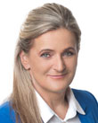

2026-06-26
Projekt wpłynął do Sejmu Druk nr 2769 ↗
u-prezydentaustawaStanowisko Senatu (2026-09-24)Sejm 10/2769
| Proces | Sejm kadencja 10, nr 2769 |
|---|---|
| Wpłynął | 2026-06-26 |
| Ostatnia zmiana źródła | 2026-09-24 |
| Źródło | api.sejm.gov.pl ↗ |
456 zdarzeń

| Klub | Za | Przeciw | Wstrz. | Nieobec. |
|---|---|---|---|---|
| PiS | 180 | 0 | 0 | 6 |
| A. Adamczyk W. Andzel D. Arciszewska-Mielewczyk I. Arent M. Ast P. Babinetz A. Baluch R. Bartosik B. Bartuś R. Bochenek J. Bogucki J. Borowiak K. Bortniczuk B. Borys-Szopa L. Burzyńska M. Błaszczak Z. Chmielowiec A. Chojecki K. Choma D. Chorosińska T. Chrzan A. Cicholska K. Ciecióra J. Cieszyński M. Cieślak K. Czarnecki W. Czarnecki P. Czarnek A. Czartoryski L. Czechak A. Czerwińska K. Czochara W. Dajczak Z. Dolata B. Dorywalski P. Drabek E. Duda J. Dziedziczak A. Dąbrowska-Banaszek M. Filipek-Sobczak R. Fogiel A. Gawron G. Gaża A. Gembicka S. Giżyński P. Gliński M. Golińska R. Gontarz M. Gosek K. Gołojuch M. Grabowski M. Gróbarczyk A. Gut-Mostowy K. Gwiazdowski M. Gwóźdź A. Górska C. Hoc Z. Hoffmann M. Horała P. Hreniak P. Jabłoński M. Jach N. Kaczmarczyk F. Kaczyński J. Kaczyński P. Kaleta S. Kaleta J. Kanthak F. Kapinos M. Kałużny Ł. Kmita M. Koc A. Kosztowniak H. Kowalczyk M. Kowalski B. Kownacki J. Krajewski W. Krajewski L. Krasulski A. Krupka A. Kryj M. Krystian P. Król K. Kubów M. Kuchciński W. Kulpa M. Kurowska W. Kurowski Z. Kuźmiuk A. Kwiecień E. Leniart J. Lichocka K. Lipiec G. Lorek M. Machałek A. Macierewicz G. Macko E. Malik D. Matecki J. Materna G. Matusiak M. Matuszewski M. Małecki A. Milczanowska D. Milewski M. Morawiecki J. Mosiński M. Moskal A. Mrówczyński M. Ociepa B. Olbryś J. Osuch A. Paluch T. Pamuła M. Pawłowska B. Piecha G. Piechowiak A. Pieczarka D. Piontkowski S. Pogoda J. Polaczek P. Polak M. Porzucek G. Puda K. Płażyński Z. Rau M. Romanowski R. Romanowski U. Rusecka P. Rychlik J. Sasin P. Sałek A. Schmidt Ł. Schreiber J. Sellin O. Semeniuk-Patkowska E. Siarka S. Skwarek K. Smoliński K. Sobolewski A. Soin M. Stachowiak-Różecka D. Stefaniuk M. Subocz M. Suski W. Szarama A. Szałabawka K. Szczucki J. Szczurek-Żelazko P. Szrot S. Szwed S. Szynkowski vel Sęk K. Sójka K. Tchórzewski R. Telus R. Terlecki W. Tomaszewski S. Tułajew P. Uruski P. Uściński M. Warchoł R. Warwas J. Warzecha M. Wassermann R. Weber M. Wesoły P. Wicher J. Wieczorek T. Wilk E. Witek A. Wojciechowska van Heukelom A. Wojtyszek M. Woś G. Woźniak T. Woźniak B. Wróblewski M. Wójcik J. Zieliński T. Zieliński Z. Ziobro W. Zubowski I. Zyska S. Łukaszewicz A. Ścigaj A. Śliwka J. Świat | ||||
| KO | 0 | 152 | 0 | 4 |
| P. Adamowicz U. Augustyn S. Bielawska P. Bliźniuk M. Bochenek K. Bojarski P. Borys M. Bosacki M. Chmielewski A. Chybicka J. Cichoń Z. Czernow B. Dolniak A. Domański R. Dowhan M. Filiks J. Frydrych K. Frysztak P. Gabriel K. Gadowski A. Gajewska K. Gajewska E. Gapińska Z. Gawlik E. Gelert A. Gierada R. Giertych W. Giziński M. Golbik S. Gorczyca K. Grabczuk J. Grabiec M. Gromadzka B. Grygorcewicz M. Gzik T. Głogowski P. Głowski K. Habura A. Hanajczyk I. Hartwich M. Hok Ł. Horbatowski K. Jachira R. Jagła M. Janyska M. Jaros P. Jaskulski D. Jazłowiecka D. Jaśkowiec P. Kandyba J. Karnowski I. Karolewska K. Kierzek-Koperska J. Kluzik-Rostkowska Z. Konwiński T. Kostuś U. Koszutska A. Kot P. Kowal I. Kozłowska E. Kołodziej M. Kołodziejczak M. Kołodziejczak M. Koźlakiewicz I. Krawczyk M. Krawczyk R. Kropiwnicki A. Krzemiński H. Krzywonos-Strycharska M. Krząkała W. Król K. Królak P. Lachowicz S. Lamczyk M. Lasek G. Lenartowicz I. Leszczyna B. Lisowska K. Lubnauer A. Marchewka D. Marek P. Masełko K. Matusik-Lipiec J. Meysztowicz K. Mieszkowski C. Mroczek A. Myrcha G. Napieralski D. Niedziela J. Niedźwiedzki M. Niemczyk J. Niezgodzka S. Nitras B. Nowacka T. Nowak M. Okła-Drewnowicz P. Olszewski K. Osos P. Papke K. Pawliczak K. Piekarska L. Pietrzczyk K. Piątkowski K. Plocke E. Polak A. Pomaska M. Popielarz M. Pępek R. Rak M. Roguska M. Rosa J. Rutnicki M. Rząsa K. Sibińska R. Siemaszko T. Siemoniak K. Skowrońska W. Smarduch A. Sobolak M. Sowa K. Stachowicz F. Sterczewski P. Suski A. Szewiński H. Szopiński K. Szumilas T. Szymański A. Szłapka W. Sługocki A. Tajner C. Tomczyk M. Tomczykiewicz M. Tracz K. Truskolaski D. Tusk J. Urbaniak A. Uznańska-Wiśniewska R. Wardzała J. Wałęsa M. Wielichowska A. Witczak M. Witczak P. Witek A. Wojciechowska B. Wołoszański M. Wróbel B. Zawieja W. Zembaczyński U. Zielińska A. Łepkowska-Gołaś D. Łoboda M. Łośko A. Łuczak K. Łuczak A. Łącki Ł. Ściebiorowski | ||||
| PSL-TD | 0 | 32 | 0 | 0 |
| W. Bartoszewski P. Bejda M. Biernacki A. Dziedzic A. Grzyb H. Kiepura D. Klimczak W. Kosiniak-Kamysz S. Krajewski A. Kłopotek R. Lubczyk M. Maliszewski U. Nowogórska M. Orliński K. Paszyk U. Pasławska M. Pyrzyk I. Raś J. Rzepa W. Różyński T. Samborski M. Sawicki C. Siekierski H. Smolarz Z. Sosnowski M. Sroka J. Tomczak S. Tomczyszyn P. Zgorzelski Z. Ziejewski J. Zięba-Gzik B. Żelazowska | ||||
| Lewica | 0 | 21 | 0 | 0 |
| B. Borowiec W. Czarzasty J. Czerniak A. Dziemianowicz-Bąk K. Gawkowski D. Gosek-Popiołek K. Kotula P. Kowal A. Kucharska-Dziedzic M. Kulasek W. Nowicka D. Olko A. Sikora W. Szczepański A. Szejna T. Tomaszewski T. Trela K. Ueberhan J. Wicha D. Wieczorek A. Żukowska | ||||
| Konfederacja | 14 | 0 | 0 | 2 |
| K. Berkowicz K. Bosak K. Bosak B. Foltyn S. Mentzen K. Mulawa B. Pejo M. Połuboczek G. Płaczek K. Szymański K. Tuduj W. Tumanowicz M. Wawer R. Wilk P. Wipler A. Zapałowski | ||||
| Centrum | 0 | 14 | 0 | 1 |
| I. Bodnar E. Burkiewicz Ż. Cwalina-Śliwowska P. Hennig-Kloska R. Kasprzyk R. Komarewicz A. Leo B. Okuła B. Oliwiecka R. Petru N. Pietrykowski M. Skonieczka M. Suchoń E. Szymanowska S. Ćwik | ||||
| Polska2050 | 0 | 13 | 0 | 2 |
| A. Buczyńska A. Gomoła M. Gramatyka P. Górnikiewicz B. Hołownia S. Hołownia A. Luboński M. Nowak Ł. Osmalak B. Romowicz E. Schädler P. Strach W. Tomczak K. Wnuk P. Śliz | ||||
| niez. | 3 | 5 | 0 | 0 |
| M. Jakubiak M. Józefaciuk J. Kowalski P. Matysiak Ł. Mejza J. Mucha P. Zalewski T. Zimoch | ||||
| Demokracja | 3 | 0 | 0 | 1 |
| J. Ardanowski P. Kukiz T. Rzymkowski J. Sachajko | ||||
| Razem | 0 | 4 | 0 | 0 |
| M. Konieczny M. Stożek A. Zandberg M. Zawisza | ||||
| Konfederacja_KP | 3 | 0 | 0 | 0 |
| R. Fritz W. Skalik S. Zawiślak | ||||
10. kadencja, 64. posiedzenie, 1. dzień - Poseł Sprawozdawca Iwona Karolewska 10. kadencja, 64. posiedzenie, 1. dzień (02-09-2026) 1. punkt porządku dziennego: Sprawozdanie Komisji Sprawiedliwości i Praw Człowieka o senackim projekcie ustawy o organach właściwych i postępowaniach w sprawach reklamy politycznej oraz odpowiedzialności za naruszenie obowiązków w tych sprawach (druki nr 2769 i 2833). Poseł Sprawozdawca Iwona Karolewska: Panie Marszałku! Wysoka Izbo! Mam zaszczyt przedstawić sprawozdanie Komisji Sprawiedliwości i Praw Człowieka o senackim projekcie ustawy o organach właściwych i postępowaniach w sprawach reklamy politycznej oraz odpowiedzialności za naruszenie obowiązków w tych sprawach, druki nr 2769 i 2833. Komisja rozpatrzyła projekt 29 lipca 2026 r. Projekt ma na celu przede wszystkim zapewnienie stosowania w Polsce rozporządzenia Parlamentu Europejskiego i Rady Unii Europejskiej dotyczącego przejrzystości i targetowania reklamy politycznej. I właśnie przejrzystość jest tutaj słowem kluczowym, bo kampania polityczna dzisiaj wygląda zupełnie inaczej niż jeszcze kilkanaście lat temu. Reklama polityczna to już nie tylko plakat, spot czy ulotka. To również przekaz kierowany do nas w Internecie, bardzo często precyzyjnie za pomocą algorytmów i danych. Dlatego obywatel powinien mieć prawo wiedzieć, czy ogląda reklamę polityczną, kto za nią zapłacił i kto jest sponsorem. To nie jest ograniczenie wolności słowa. To jest jego ochrona. Projekt nie ocenia poglądów politycznych i nie decyduje o tym, jakie treści mogą być rozpowszechniane. Wprowadza natomiast jasne zasady dotyczące przejrzystości reklamy politycznej oraz odpowiedzialności za naruszenie tych zasad. Projekt wskazuje także organy odpowiedzialne za wykonywanie przepisów unijnego rozporządzenia. Kluczową rolę w tym systemie będzie odgrywać Państwowa Komisja Wyborcza, a w zakresie swoich kompetencji również właściwe organy regulacyjne i ochrony praw obywateli. Wysoka Izbo! Podczas prac komisji ważne było dla nas zachowanie równowagi pomiędzy przejrzystością reklamy politycznej a ochroną podstawowych praw i wolności, w szczególności wolności wypowiedzi i ochrony danych osobowych. Demokracja potrzebuje wolności słowa, ale demokracja potrzebuje również uczciwych i przejrzystych reguł gry. Nie możemy dopuścić do sytuacji, w której obywatel nie wie, kto finansuje przekaz, który ma wpływać na jego decyzję wyborczą. Nie możemy też udawać, że Internet i algorytmy nie mają wpływu na współczesną politykę. Potrzebujemy prawa, które odpowiada na rzeczywistość, w której dzisiaj funkcjonujemy. Ta ustawa nie jest przeciwko żadnej partii, nie jest przeciwko żadnemu kandydatowi. Jest za prawem obywatela do informacji, za tym, żeby wyborca wiedział, kto chce go przekonać, kto za to płaci i dlaczego właśnie do niego kierowany jest ten przekaz. Bo uczciwe wybory to nie tylko sam dzień głosowania, to również warunki, w jakich obywatel podejmuje decyzję. Przejrzystość reklamy politycznej nie jest zagrożeniem dla demokracji. Jest jednym z warunków jej ochrony. Dlatego Komisja Sprawiedliwości i Praw Człowieka wnosi o uchwalenie ustawy w brzmieniu zawartym w sprawozdaniu z druku nr 2833. Dziękuję bardzo. (Oklaski) Przebieg posiedzenia
10. kadencja, 64. posiedzenie, 1. dzień - Poseł Paweł Szrot 10. kadencja, 64. posiedzenie, 1. dzień (02-09-2026) 1. punkt porządku dziennego: Sprawozdanie Komisji Sprawiedliwości i Praw Człowieka o senackim projekcie ustawy o organach właściwych i postępowaniach w sprawach reklamy politycznej oraz odpowiedzialności za naruszenie obowiązków w tych sprawach (druki nr 2769 i 2833). Poseł Paweł Szrot: Panie Marszałku! Wysoka Izbo! Występując w imieniu Klubu Parlamentarnego Prawo i Sprawiedliwość w czasie pierwszego czytania, zaznaczyłem, że nie jestem doktrynerem legislacyjnym i potrafię sobie wyobrazić sytuację, że zostanę do tego projektu przekonany na posiedzeniu komisji. Jednak nic takiego nie nastąpiło. Prace komisji w zasadzie potwierdziły, że tak naprawdę nikt nie ma ani serca, ani przekonania zarówno do projektu, jak i do rozporządzenia Unii Europejskiej, które ten projekt implementuje. Cała różnica w tym, że podmioty, które ten projekt ma na siłę uszczęśliwiać, nadając nowe kompetencje i obowiązki, czyli Państwowa Komisja Wyborcza, Krajowa Rada Radiofonii i Telewizji, a także UOKiK, UODO i UKE, traktują go jako dopust Boży. Autorzy projektu z Senatu i przedstawiciele rzadu i wspierającej go koalicji sejmowej traktują z kolei unijne rozporządzenie jak dogmat uchwalony przez Komisję Europejską, z którym nie mają zwyczaju dyskutować. W przypadku rozpatrywanego dziś projektu i rozporządzenia będącego jego źródłem mamy do czynienia z raczej typową sytuacją, w której fobie i uprzedzenia zrodziły biurokrację, nadregulację i horrendalne sankcje. Fobie autorów unijnych regulacji dotyczą braku wiary w demokrację, przekonania, że jeśli obywatele krajów europejskich podejmują decyzje wyborcze niezgodne z interesami establishmentu europejskiego, to musi być to skutkiem wyborczych nadużyć i manipulacji. Receptą na to mają być typowe europejskie środki zaradcze - lawina biurokracji w formie oświadczeń, wniosków, wykazów i rejestrów i idące za nimi sankcje wymierzane do wysokości 6% rocznego przychodu. W moim przekonaniu Komisja Europejska nie ma żadnych kompetencji i uprawnień, aby wkraczać w przedmiotowy zakres procedur wyborczych i kampanii wyborczej w krajach członkowskich. Przytaczany tutaj, jako uzasadnienie, argument dotyczący usług transgranicznych ma charakter pretekstowy - wybitnie pretekstowy - i tak naprawdę jest dosyć żenujący. Przepisy polskiego Kodeksu wyborczego w wystarczający sposób regulują wymóg przejrzystości kampanii wyborczych, choć ich realne stosowanie jest tematem na inną dyskusję, której zresztą nie doczekaliśmy się po zeszłorocznej kampanii prezydenckiej i, zdaje się, już się w tej Izbie nie doczekamy. Można by ewentualnie podjąć rzetelną i rzeczową dyskusję o uzupełnieniu informacji zamieszczanych przy reklamach wyborczych o kwestie targetowania czy sztucznej inteligencji, ale rozumiem, że nie o to chodzi ani autorom tych unijnych regulacji, ani autorom rozpatrywanej dziś ustawy, ani rządowi i koalicji. Osobiście z wielką chęcią podyskutowałbym na tej sali o realnych przypadkach nadużyć wyborczych, np. o wspieraniu kampanii wyborczej Rafała Trzaskowskiego nielegalnymi środkami finansowymi z zagranicy - taka sytuacja miała miejsce. Prokuratura rzekomo prowadzi tę sprawę, ale finału dotychczas nie ma. Wobec tego szkodliwego projektu ustawy mogę jedynie złożyć w imieniu Klubu Parlamentarnego Prawo i Sprawiedliwość wniosek o jego odrzucenie. (Oklaski) Przebieg posiedzenia
10. kadencja, 64. posiedzenie, 1. dzień - Poseł Sylwia Bielawska 10. kadencja, 64. posiedzenie, 1. dzień (02-09-2026) 1. punkt porządku dziennego: Sprawozdanie Komisji Sprawiedliwości i Praw Człowieka o senackim projekcie ustawy o organach właściwych i postępowaniach w sprawach reklamy politycznej oraz odpowiedzialności za naruszenie obowiązków w tych sprawach (druki nr 2769 i 2833). Poseł Sylwia Bielawska: Szanowny Panie Marszałku! Wysoka Izbo! W zasadzie nie dziwi mnie to, że występujący przede mną poseł rozpoczął swoją wypowiedź od tego, że jest to projekt ustawy, który będzie ograniczał w pewien sposób wolność słowa, i że nikt nie powinien do tego zmierzać. (Poseł Paweł Szrot: Właściwie tego nie powiedziałem, ale.) Zapewne na takie same argumenty będą powoływać się również pozostali posłowie występujący po mnie, zwłaszcza z opcji prawicowej. Rozpatrywany po raz kolejny projekt ustawy, przypomnę, dotyczy niezwykle ważnej kwestii, a mianowicie wdrożenia do porządku prawnego rozporządzenia w zakresie - powtórzę to bardzo wyraźnie - przejrzystości i targetowania reklamy politycznej. Wszyscy, którzy mówią, że jest to projekt ustawy niepotrzebnej w naszym prawie, zapominają o tym, że regulacja, o której mówimy, ma na celu jedynie uporządkowanie zasad funkcjonowania rynku wewnętrznego reklamy politycznej oraz wspierania uczciwej i otwartej debaty politycznej. Doskonale wiemy, że reklama polityczna w dzisiejszych czasach to nie jest tylko ulotka, spot telewizyjny, baner czy plakat. Dzisiaj ogromna część kampanii odbywa się nie gdzie indziej, tylko w Internecie, z wykorzystaniem zaawansowanego targetowania algorytmów i platform społecznościowych. Obywatel bardzo często nie wie, kto finansuje tego typu przekaz, dlaczego ten przekaz do niego dociera i jakie dane zostały wykorzystane do tego, by dany przekaz mu się wyświetlał. Dlatego uporządkowanie przepisów dotyczących reklamy politycznej w tym zakresie jest konieczne. Potrzebujemy jasnych, przejrzystych reguł, które zapewnią, że każdy obywatel będzie miał wiedzę o tym, kto finansuje, i będzie potrafił zidentyfikować sponsorów. Potrzebujemy również skutecznego nadzoru nad przestrzeganiem prawa w tym zakresie. Nie po to, aby ograniczać debatę publiczną, to nie jest celem tej ustawy, ale po to, aby wzmacniać zaufanie obywateli do procesu demokratycznego. Nasz kraj potrzebuje spójnych, jasnych przepisów dotyczących reklamy politycznej. Wysoka Izbo! W ostatnich czasach wielokrotnie obserwowaliśmy próby ingerencji obcych państw w procesy demokratyczne różnych krajów. Chodzi nie tylko o klasyczne cyberataki, ale także o prowadzenie skoordynowanych kampanii dezinformacyjnych, wykorzystywanie niejawnie finansowanych reklam politycznych, fałszywych kont, sieci, botów czy też komunikatów, które budzą określone nastroje społeczne. Celem takich działań często jest nie przekonanie wyborców do konkretnego kandydata, ale osłabienie zaufania do instytucji państwa i samego procesu wyborczego. Pamiętajmy o tym, że nie możemy zakładać, że takie zagrożenia nie dotyczą naszego kraju. Jesteśmy państwem granicznym Unii Europejskiej i NATO. Nasze wybory i referenda mają znaczenie ogólnoświatowe, międzynarodowe, dlatego przejrzystość reklamy politycznej jest elementem bezpieczeństwa państwa. Klub Koalicji Obywatelskiej będzie głosował za tym projektem ustawy. Bardzo prosimy o jego przyjęcie wraz z wprowadzonymi poprawkami. Dziękuję bardzo. (Oklaski) Przebieg posiedzenia
10. kadencja, 64. posiedzenie, 1. dzień - Poseł Wojciech Michał Zubowski 10. kadencja, 64. posiedzenie, 1. dzień (02-09-2026) 1. punkt porządku dziennego: Sprawozdanie Komisji Sprawiedliwości i Praw Człowieka o senackim projekcie ustawy o organach właściwych i postępowaniach w sprawach reklamy politycznej oraz odpowiedzialności za naruszenie obowiązków w tych sprawach (druki nr 2769 i 2833). Poseł Wojciech Michał Zubowski: Panie Marszałku! Wysoka Izbo! Mam zaszczyt przedstawić stanowisko Klubu Parlamentarnego Rozwój Plus wobec sprawozdania komisji o senackim projekcie ustawy o organach właściwych i postępowaniach w sprawach reklamy politycznej oraz odpowiedzialności za naruszenie obowiązków w tych sprawach, druki nr 2769 i 2833. Szanowni Państwo! Debata nad tym projektem ustawy miała już miejsce na sali plenarnej w lipcu tego roku. Padł wówczas wniosek o odrzucenie zawartych w nim rozwiązań. Trudno temu się dziwić, skoro również podczas szczegółowej dyskusji nad projektem ustawy prowadzonej na posiedzeniu komisji sami przedstawiciele Państwowej Komisji Wyborczej wyrażali się o projekcie z dezaprobatą. Wątpliwości podzieliło też sejmowe Biuro Ekspertyz i Oceny Skutków Regulacji. Podczas dyskusji w komisji, jak również na sali plenarnej zwracano uwagę na zagrożenia dotyczące upolitycznienia Państwowej Komisji Wyborczej, na co, nawiasem mówiąc, jest już chyba za późno, na niejasny podział kompetencji, wyjątkowo krótki okres prowadzenia konsultacji społecznych, a nawet na brak gotowości finansowej i organizacyjnej poszczególnych instytucji do realizacji przydzielonych im zadań. Szanowni Państwo! Pozwolę sobie przytoczyć fragment stenogramu z posiedzenia komisji: Mając te kwestie na uwadze, tak jak w postępowaniu dotyczącym tych kwestii prowadzonym w Senacie, Państwowa Komisja Wyborcza nie popiera powierzenia jej tych obowiązków, o których jest mowa w rozporządzeniu. Zwracamy uwagę, tak jak dotychczas w opiniach wyrażonych w postępowaniu w Senacie, że przyjęcie tych rozwiązań mogłoby godzić w wiarygodność procesów wyborczych w Polsce, w system kontroli finansowania partii politycznych, kampanii wyborczej, a także w pluralizm polityczny i mogłoby to negatywnie wpływać na potrzebę zagwarantowania możliwie największej niezależności organów wyborczych i izolowania ich od bieżących sporów politycznych. To jest, proszę państwa, głos dyrektora Zespołu Kontroli Finansowej Partii Politycznych i Kampanii Wyborczych w Krajowym Biurze Wyborczym. Szanowni Państwo! Niestety na istotne pytania zadawane przedstawicielowi wnioskodawców nie zostały udzielone jasne odpowiedzi, a liczba wątpliwości wręcz się pogłębiła. By było jasne: kwestie uregulowania reklam politycznych, wskazywania ich finansowania i odpowiednich oznaczeń powinny być jasne i klarowne. Zanim jednak zaczniemy wdrażać unijne przepisy, powinniśmy mieć przekonanie, że nie będzie to kolejna próba założenia politycznego knebla na obecną opozycję przez rządzące ugrupowania, które nie widzą i nie chcą widzieć problemów związanych, choćby do dziś, z niewyjaśnionymi kwestiami wspierania przez tego typu kampanie ich kandydata w ostatnich wyborach prezydenckich. Takie przekonanie można mieć i jest to przekonanie uzasadnione. Dlatego, szanowni państwo, w imieniu Klubu Parlamentarnego Rozwój Plus opowiadam się za odrzuceniem proponowanego projektu ustawy wraz z przyjętymi na posiedzeniu komisji zmianami. Dziękuję bardzo. (Oklaski) Przebieg posiedzenia
10. kadencja, 64. posiedzenie, 1. dzień - Poseł Michał Pyrzyk 10. kadencja, 64. posiedzenie, 1. dzień (02-09-2026) 1. punkt porządku dziennego: Sprawozdanie Komisji Sprawiedliwości i Praw Człowieka o senackim projekcie ustawy o organach właściwych i postępowaniach w sprawach reklamy politycznej oraz odpowiedzialności za naruszenie obowiązków w tych sprawach (druki nr 2769 i 2833). Poseł Michał Pyrzyk: Dziękuję bardzo. Szanowny Panie Marszałku! Wysoki Sejmie! Mam zaszczyt w imieniu klubu parlamentarnego Polskie Stronnictwo Ludowe przedstawić nasze oświadczenie w sprawie sprawozdania Komisji Sprawiedliwości i Praw Człowieka, dotyczącego senackiego projektu ustawy o organach właściwych i postępowaniach w sprawach reklamy politycznej oraz odpowiedzialności za naruszenie obowiązków w tych sprawach. Projekt, tak jak słyszeliśmy, ma na celu wdrożenie unijnego rozporządzenia. To ma przede wszystkim zwiększyć przejrzystość finansowania i transparentność kierowania przekazów politycznych, ich targetowania, a w przypadku naruszeń tych obowiązków ustalić pewne zasady odpowiedzialności. Komisja wprowadziła do projektu poprawki o charakterze doprecyzowującym, redakcyjnym, a także ujednoliciła pewne pojęcia. Ale należy przypomnieć o czym rozmawiamy, czym jest reklama polityczna. Zgodnie ze wspomnianym przeze mnie unijnym rozporządzeniem za taką reklamę uznaje się każdy przekaz, który jest przygotowywany, publikowany lub rozpowszechniany, zazwyczaj za wynagrodzeniem i spełnia jeden z warunków, a mianowicie: jest realizowany przez podmiot polityczny, w jego imieniu lub na jego rzecz albo, po drugie, ma na celu wywieranie wpływu na wynik wyborów, referendum, na proces legislacyjny albo na zachowania wyborcze obywateli. Rozporządzenie wyraźnie to oddziela. Nie należy utożsamiać z reklamą polityczną opinii wyrażanych we własnym imieniu, a także treści redakcyjnych i opinii podlegających odpowiedzialności redakcyjnej, niezależnie od środka przekazu, chyba że za przygotowanie tych opinii, za ich publikację, ich rozpowszechnianie przez osoby trzecie pobrano stosowne wynagrodzenie. Wtedy opinia przestaje być opinią, staje się reklamą polityczną. W ślad za tym projekt wprowadza nowe obowiązki związane z takim przekazem, właśnie z reklamą polityczną. Każda musi być wyraźnie oznaczona, a oznaczenie powinno zawierać szczegółowe informacje, takie jak: dane sponsora, źródła finansowania, czy są to środki publiczne, krajowe, prywatne lub zagraniczne. Powinna zawierać informacje na temat całościowej kwoty wydatków na reklamę, dane o okresie emisji, a także o przewidywanym zasięgu reklamy. Nowe przepisy wprowadzają też dość duże ograniczenia, jeśli chodzi o zakaz reklamy politycznej, pochodzącej od sponsorów spoza Unii Europejskiej, w okresie 3 miesięcy poprzedzających wybory lub referendum. Ma to oczywiście w sposób prosty, jednoznaczny zapobiegać zagranicznym ingerencjom w procesy wewnętrzne, procesy demokratyczne. Tak jak mówiono, ustawa przewiduje zadania poszczególnych organów odpowiedzialnych za nadzorowanie przestrzegania tych przepisów. Ma to być m.in. Państwowa Komisja Wyborcza, która ma koordynować współpracę między organami krajowymi oraz innymi z krajów państw członkowskich Unii Europejskiej. W okresie kampanii wyborczej, czy to referendalnej, czy kampanii do parlamentu, czy kampanii prezydenckiej, a także w okresie ciszy wyborczej Państwowa Komisja Wyborcza stanie się w zasadzie jedynym organem właściwym do nadzoru nad reklamą polityczną. Poza okresami kampanijnymi te zadania przejmą regulatorzy sektorowi, tacy jak chociażby prezes Urzędu Komunikacji Elektronicznej, Krajowa Rada Radiofonii i Telewizji, czy prezes Urzędu Ochrony Konkurencji i Konsumentów. Organy nadzoru będą mogły wydawać ostrzeżenie, nakazywać zaprzestania naruszeń, zobowiązać albo sponsora, albo dostawcę do podjęcia kroków niezbędnych do zapewnienia przekazu reklamy w zgodności z przepisami prawa. Organy będą mogły wprowadzać środki zaradcze, a jeżeli naruszenie zostani
10. kadencja, 64. posiedzenie, 1. dzień - Poseł Arkadiusz Sikora 10. kadencja, 64. posiedzenie, 1. dzień (02-09-2026) 1. punkt porządku dziennego: Sprawozdanie Komisji Sprawiedliwości i Praw Człowieka o senackim projekcie ustawy o organach właściwych i postępowaniach w sprawach reklamy politycznej oraz odpowiedzialności za naruszenie obowiązków w tych sprawach (druki nr 2769 i 2833). Poseł Arkadiusz Sikora: Panie Marszałku! Wysoka Izbo! W imieniu klubu Lewicy chciałbym przedstawić stanowisko wobec projektu ustawy oraz sprawozdania komisji, druki nr 2769 i 2833, dotyczące reklamy elektronicznej. Jest to oczywiście projekt senacki. Panie Pośle Szrot! Panie Pośle Zubowski! Czego się boicie? Przecież to jest projekt ustawy, który tak naprawdę wprowadza transparentność, przejrzystość, jasne zasady finansowania kampanii wyborczych, referendów. Do tej pory obowiązywały przepisy, które zawierały właśnie te zasady, jeśli chodzi o tradycyjne reklamy, ponieważ w znacznie większej liczbie... W tej chwili dominują reklamy w formie elektronicznej i internetowej. Ten proces się rozwija, cały ten sektor się rozwija. Przyszedł taki moment, że trzeba uregulować też reklamy tego typu. Widzieliśmy w ubiegłym roku, co reklama elektroniczna może zrobić z wyborami, choćby w Bułgarii. Widzieliśmy, że w Bułgarii wybory prezydenckie zostały unieważnione ze względu na bardzo duże ingerencje rosyjskich farm trolli. (Poseł Paweł Szrot: Chyba w Rumunii.) Tak, w Rumunii. Tak się skończyły te wybory. Widzimy, że ewidentnie postępuje proces rozwoju reklamy elektronicznej i wymaga on uregulowania. Został on uregulowany w wielu krajach Unii Europejskiej. Przyszedł czas na to, żebyśmy to zrobili u nas, bo nie chcemy mieć tego, co w Rumunii, nie chcemy mieć innych takich przypadków podczas najbliższych wyborów parlamentarnych. W związku z tym to po prostu trzeba zrobić. My tego nie robimy, nie tworzymy nowych instytucji, które ten nadzór wprowadzą. Oddajemy to w ręce już sprawdzonych instytucji, czyli PKW, a także instytucji, które są poza... (Poseł Paweł Szrot: PKW tego nie chce.) Oczywiście może PKW tego nie chce, a może i chce, ale jakaś instytucja musi to robić. Skoro nadzoruje zwykły, analogowy proces reklamy, to dlaczego nie miałaby nadzorować procesu elektronicznego? Wszystkie te kwestie są w tym projekcie regulowane. My jako Lewica oczywiście jesteśmy za tym, żeby proces wyborczy był równy dla wszystkich uczestników, żeby był transparentny, przejrzysty, a przede wszystkim żeby kapitał nie miał wpływu na decyzje wyborców podczas wyborów parlamentarnych, samorządowych czy jakichkolwiek innych. Jesteśmy za pełną przejrzystością tego procesu. Chcemy zatem wiedzieć, kto to finansuje, w jakiej ilości i dlaczego, kto ma w tym interes. Dlaczego nie można tego uregulować również na poziomie elektronicznym? (Poseł Paweł Szrot: Niech premier Gawkowski ujawni...) Rozumiem, że ZondaCrypto bardzo chętnie wpłynęłaby na finansowanie niektórych partii politycznych. Pewnie też po to te pieniądze były wyciągane i transferowane od polskich obywateli, ale my się na to nie godzimy. My chcemy pełnej transparentności wyborczej. (Poseł Paweł Szrot: Proszę przekonać premiera Gawkowskiego...) Lewica oczywiście będzie popierała ten projekt ustawy. Dziękuję. (Oklaski) Przebieg posiedzenia
10. kadencja, 64. posiedzenie, 1. dzień - Poseł Sławomir Ćwik 10. kadencja, 64. posiedzenie, 1. dzień (02-09-2026) 1. punkt porządku dziennego: Sprawozdanie Komisji Sprawiedliwości i Praw Człowieka o senackim projekcie ustawy o organach właściwych i postępowaniach w sprawach reklamy politycznej oraz odpowiedzialności za naruszenie obowiązków w tych sprawach (druki nr 2769 i 2833). Poseł Sławomir Ćwik: Szanowny Panie Marszałku! Wysoka Izbo! Mam zaszczyt w imieniu klubu Unia Centrum przedstawić stanowisko wobec senackiego projektu ustawy o organach właściwych i postępowaniach w sprawach reklamy politycznej oraz odpowiedzialności za naruszenie obowiązków w tych sprawach. Niewątpliwie ta kwestia wymaga uregulowania, ponieważ możemy zaobserwować, że wykorzystywanie drogi elektronicznej w kampanii wyborczej staje się coraz szersze i ma decydujący wpływ na wynik wyborczy, szczególnie w przypadku młodszego pokolenia, które w coraz mniejszym stopniu korzysta z tradycyjnych form mediów, a skupia się na mediach elektronicznych i z nich czerpie swoją wiedzę o Polsce i świecie. Widzimy też na przykładzie innych państw, jak łatwo jest manipulować opinią publiczną i dotrzeć z przekazem, który sprzyja określonym siłom politycznym. Widzimy, jak często kraje wrogie Polsce mogą wykorzystywać ten kanał komunikacji do wpływania na nastroje polityczne w Polsce i na polityczne wybory Polaków. Dlatego konieczne było określenie organu państwowego, który będzie punktem kontaktowym, jeśli chodzi o sprawdzanie kwestii reklamy docierającej do ludzi drogą elektroniczną, i zaproponowanie zmian w Kodeksie postępowania cywilnego w zakresie norm postępowania w tych sprawach, aby mogły one przebiegać szybko i sprawnie. Tym, czego nie widzimy w tym projekcie ustawy, ale rozumiem, że to będzie ewentualnie kwestia aktów wykonawczych, a przede wszystkim budżetu Państwowej Komisji Wyborczej, jest zapewnienie Państwowej Komisji Wyborczej narzędzi do tego, aby w sposób należyty i sprawny wykonywała uprawnienia wynikające z tych zapisów ustawy. Tym, co, jak myślę, także powinniśmy ująć wprost w Kodeksie wyborczym, a czego w tej chwili nie mamy jeszcze w naszym prawodawstwie, jest kwestia wykorzystywania narzędzi sztucznej inteligencji do tworzenia przekazu, do tworzenia treści politycznych w kampaniach wyborczych, które także mogą mieć istotny wpływ. W mojej ocenie w przypadku każdego materiału mającego znamiona agitacji wyborczej, będącego materiałem wyborczym w rozumieniu Kodeksu wyborczego, który został wytworzony z wykorzystaniem systemów sztucznej inteligencji, powinno się określić, że został stworzony przy wykorzystaniu tych narzędzi. Po części oczywiście to mogą być bardzo drobne zmiany prowadzące jedynie, powiedzmy, do korekty czyjejś fryzury, ale mogą one wytwarzać także tzw. deepfake’i, np. sprawiające wrażenie, że ktoś coś powiedział, podczas gdy tak naprawdę jest to nagranie, film wygenerowany przez generatywną sztuczną inteligencję, a wpływający wprost na wynik wyborczy w Polsce. Myślę, że nad tym też powinniśmy pracować. Co do tego projektu ustawy chcę powiedzieć, że klub Centrum w całości popiera przedłożenie senackie. Oczywiście będziemy nad tą ustawą pracować nadal w komisji. Dziękuję bardzo. (Oklaski) Przebieg posiedzenia
10. kadencja, 64. posiedzenie, 1. dzień - Poseł Michał Gramatyka 10. kadencja, 64. posiedzenie, 1. dzień (02-09-2026) 1. punkt porządku dziennego: Sprawozdanie Komisji Sprawiedliwości i Praw Człowieka o senackim projekcie ustawy o organach właściwych i postępowaniach w sprawach reklamy politycznej oraz odpowiedzialności za naruszenie obowiązków w tych sprawach (druki nr 2769 i 2833). Poseł Michał Gramatyka: Szanowny Panie Marszałku! Panie Posłanki! Panowie Posłowie! W imieniu Klubu Parlamentarnego Polska 2050 mam zaszczyt przedstawić nasze stanowisko. Oczywiście zagłosujemy za senackim projektem ustawy, zgadzając się z głównymi obszarami, które on reguluje. Przejrzystość. Musimy mieć wiedzę, od kogo pochodzi każda reklama polityczna i przez kogo jest finansowana. Ograniczenie targetowania on-line. Musimy mieć wiedzę, w jaki sposób wykorzystywane są dane do tego, żeby reklamy polityczne były w Internecie rozpowszechniane, w jaki sposób pozyskiwane są zgody osób, których takie reklamy dotyczą i do których takie reklamy mogą trafiać, w jaki sposób platformy społecznościowe albo, inaczej je nazywając, algorytmiczne kanały reklamowe targetują reklamy, wykorzystując nasze zgody, oraz jak te zgody są pozyskiwane. Repozytorium europejskie. To bardzo istotny element tego przedłożenia. Jedna duża baza danych, gdzie będzie można zarówno w momencie trwania kampanii wyborczych, jak i po ich zakończeniu uzyskać dostęp do wszystkich zgromadzonych tam materiałów, którymi jesteśmy bombardowani w Internecie. I wreszcie kwestia wpływów firm działających poza wspólnym rynkiem, poza Europejskim Obszarem Gospodarczym, poza Unią Europejską. Chodzi o to, na ile takie firmy podczas kampanii wyborczej mogą mieć wpływ na obraz reklamy politycznej, którą widzimy. Jest takie przysłowie ludowe, które mówi, że w mętnej wodzie diabeł ryby łowi. Rozumiem część tych krytycznych wypowiedzi ludzi, którzy są oddani takim właśnie nie do końca określonym zasadom. Zasadom, które umożliwiają pojawienie się reklam politycznych pochodzących nie wiadomo skąd, finansowanych przez nie wiadomo kogo. Przedłożenie odpowiada na odwieczne pytanie: Na ile potrafimy własnym osądem i własnym rozumem sprzeciwić się algorytmowi? (Poseł Paweł Szrot: W takim razie demokracja nie ma sensu.) Badania prowadzone choćby przez Nature albo przez Science nie pozostawiają tutaj żadnych wątpliwości: w przypadku 5 tys. probantów, wobec których zastosowano spersonalizowany algorytm, odnotowano znaczną zmianę poglądów, znaczną zmianę podejmowanych przez nich decyzji. Algorytm, który w założeniu ma filtrować to, co do nas dociera, modyfikuje nasze poglądy. Nie chcę sięgać do tak ewidentnych przykładów, jak choćby ten z okresu rozpoczęcia pełnoskalowej rosyjskiej agresji względem Ukrainy, gdzie w ciągu kilku dni w całej przestrzeni mediów społecznościowych wszystkie grupy, które dotąd siały przekaz antyszczepionkowy, zaczęły siać przekaz antyukraiński. Takie właśnie są cele tego przedłożenia i tej regulacji, żeby ona po prostu opierała się na jasnych zasadach. Z radością witam decyzje, które już zapadły na platformach społecznościowych, które to platformy po prostu powiedziały, przynajmniej te największe, że wstrzymują propagowanie reklam politycznych właśnie ze względu na przepisy, które zaczynają obowiązywać w Unii Europejskiej. Przynajmniej pewne rzeczy będą jasne i przynajmniej one będą oparte na prawie. Tym bardziej mam satysfakcję, że to będzie polskie prawo, uchwalone w Sejmie Rzeczypospolitej Polskiej na wniosek polskiego Senatu. Bardzo dziękuję. (Oklaski) Przebieg posiedzenia
10. kadencja, 64. posiedzenie, 1. dzień - Poseł Jarosław Sachajko 10. kadencja, 64. posiedzenie, 1. dzień (02-09-2026) 1. punkt porządku dziennego: Sprawozdanie Komisji Sprawiedliwości i Praw Człowieka o senackim projekcie ustawy o organach właściwych i postępowaniach w sprawach reklamy politycznej oraz odpowiedzialności za naruszenie obowiązków w tych sprawach (druki nr 2769 i 2833). Poseł Jarosław Sachajko: Demokracja Bezpośrednia. Szanowny Panie Marszałku! Wysoka Izbo! Pod pozorem porządkowania zasad reklamy politycznej tworzycie system, który w czasie kampanii oddaje Państwowej Komisji Wyborczej bardzo dużą władzę nad uczestnikami politycznej konkurencji. Państwowa Komisja Wyborcza ma nadzorować przestrzeganie tych przepisów, prowadzić postępowania i nakładać administracyjne kary pieniężne. Kary mogą sięgać 6% rocznego przychodu. Ale jest tutaj jeszcze poważniejszy problem. Sięgnijmy nie do politycznych komentarzy, lecz do oficjalnego systemu europejskiego identyfikatora prawodawstwa i Kodeksu wyborczego. Siedmiu z dziewięciu członków Państwowej Komisji Wyborczej to osoby wskazane przez Sejm. Co więcej, Kodeks wyborczy stanowi wprost, że kandydatów wskazują kluby parlamentarne lub poselskie proporcjonalnie do swojej reprezentacji w Sejmie. A teraz przeczytajmy art. 22 ust. 4 rozporządzenia Unii Europejskiej, które ta ustawa ma wykonywać: właściwy organ ma strukturalnie korzystać z pełnej niezależności od jakichkolwiek zewnętrznych ingerencji lub nacisków politycznych. Pytam więc: Jak chcecie zagwarantować pełną strukturalną niezależność od nacisków politycznych organu, którego siedmiu z dziewięciu członków pochodzi ze wskazania klubów parlamentarnych? Nie twierdzę, że każdy członek Państwowej Komisji Wyborczej wykonuje polecenia partii. Twierdzę coś innego: już dzisiaj decyzje Państwowej Komisji Wyborczej wywołują ogromne spory polityczne i podważane jest zaufanie do jej bezstronności. A wy zamiast ten problem ograniczyć, dokładacie Państwowej Komisji Wyborczej kolejne, niezwykle wrażliwe kompetencje wobec partii, komitetów, wydawców i reklam politycznych. I dzieje się to właśnie w czasie kampanii wyborczej. Co więcej, od decyzji Państwowej Komisji Wyborczej można się wprawdzie odwołać do sądu, ale samo odwołanie nie wstrzymuje automatycznie jej wykonania. Dopiero sąd może takie wstrzymanie zastosować, a wybory nie poczekają na wyrok. Jeżeli reklama zostanie zatrzymana 10 dni przed wyborami, to nawet uchylenie tej decyzji kilka tygodni później nie odda komitetowi straconej kampanii i nie cofnie wyniku wyborczego. To jest fundamentalny problem tej ustawy. Nie wolno budować systemu nadzoru nad polityczną debatą, w którym organ wyłaniany w dominującej części przez polityków dostaje w samym środku kampanii tak daleko idące instrumenty wobec swoich politycznych konkurentów. Dlatego tego projektu nie można poprzeć. Dziękuję. (Oklaski) Przebieg posiedzenia
10. kadencja, 64. posiedzenie, 1. dzień - Poseł Sławomir Zawiślak 10. kadencja, 64. posiedzenie, 1. dzień (02-09-2026) 1. punkt porządku dziennego: Sprawozdanie Komisji Sprawiedliwości i Praw Człowieka o senackim projekcie ustawy o organach właściwych i postępowaniach w sprawach reklamy politycznej oraz odpowiedzialności za naruszenie obowiązków w tych sprawach (druki nr 2769 i 2833). Poseł Sławomir Zawiślak: Panie Marszałku! Wysoka Izbo! Państwowa Komisja Wyborcza powinna być arbitrem wyborów. Tymczasem procedowany projekt ustawy wręcza temu arbitrowi nie tylko gwizdek, lecz także dodatkowe uprawnienia. Jest to zły kierunek. Sama Państwowa Komisja Wyborcza zdecydowanie negatywnie oceniła powierzenie jej dodatkowych zadań. Ostrzegała, że mogą one zagrozić prawidłowemu przeprowadzeniu wyborów i sprawić, że komisja zacznie być postrzegana jako uczestnik bieżącej walki politycznej. Trudno o poważniejsze ostrzeżenie. Projekt przewiduje, że w czasie kampanii Państwowa Komisja Wyborcza będzie dodatkowo nadzorowała przestrzeganie przepisów dotyczących reklamy politycznej, prowadziła postępowania i nakładała kary na sponsorów, wydawców oraz dostawców usług reklamowych. Jednocześnie każdy obywatel będzie mógł złożyć wniosek o wszczęcie postępowania bez wymogu wykazania interesu prawnego i bez zabezpieczenia przed seryjnymi, politycznie motywowanymi zawiadomieniami. Wyobraźmy sobie ostatnie tygodnie kampanii. Komitety składają zawiadomienia na konkurentów, Państwowa Komisja Wyborcza zamiast koncentrować się na przygotowaniu głosowania analizuje reklamy, a każda jej decyzja natychmiast staje się przedmiotem politycznego sporu. Można nawet taki akt prawny rozwinięty przez Senat na zlecenie Unii Europejskiej nazwać prowokowaniem celowego naruszania przygotowań wyborów czy wręcz ich paraliżem, kierunkowym paraliżem. Jawność finansowania reklam politycznych, źródeł ich finansowania oraz kosztów emisji jest potrzebna. Podobnie potrzebna jest możliwość kontrolowania zagranicznych podmiotów świadczących usługi reklamowe w Polsce. Mamy tu przykłady rzeczywiście zagraniczne. Była tutaj Rumunia wymieniana. Media donosiły, że to właśnie liberalne siły związane z Unią Europejską wpływały na wybory w Unii Europejskiej. Były inne przykłady angażowania się Unii Europejskiej, ale także innych państw w wybory. Tego Konfederacja Korony Polskiej nie kwestionuje. Mówiła o tej jawności czy też potrzebie ochrony przed ukrytym profilowaniem. Problemem nie jest bowiem cel, ale konstrukcja organów, procedury. Konfederacja Korony Polskiej domaga się ograniczenia roli Państwowej Komisji Wyborczej do funkcji koordynacyjnej, uporządkowania kompetencji organów oraz zagwarantowania jasnych procedur. Jeżeli takie zmiany nie zostaną wprowadzone do ustawy, będziemy głosowali przeciw, bo państwo, które dla unijnego sprawozdania poświęca zaufanie do własnych wyborców, dezorganizuje procedury wyborcze, paraliżuje je po części czy próbuje paraliżować, czy umożliwia paraliżowanie, nie broni przejrzystości wyborów, co zagraża ich jasnemu przeprowadzeniu. Dziękuję bardzo. Przebieg posiedzenia
10. kadencja, 64. posiedzenie, 1. dzień - Poseł Anna Gembicka 10. kadencja, 64. posiedzenie, 1. dzień (02-09-2026) 1. punkt porządku dziennego: Sprawozdanie Komisji Sprawiedliwości i Praw Człowieka o senackim projekcie ustawy o organach właściwych i postępowaniach w sprawach reklamy politycznej oraz odpowiedzialności za naruszenie obowiązków w tych sprawach (druki nr 2769 i 2833). Poseł Anna Gembicka: Panie Marszałku! Wysoka Izbo! Chcą dzisiaj państwo regulować reklamę polityczną, mówić o przejrzystości finansowania i chronić polskie wybory przed ingerencją z zagranicy. To ja pytam: Gdzie byliście obecnie rządzący podczas wyborów prezydenckich w 2025 r.? Wtedy dwa anonimowe profile: Wiesz Jak Nie Jest i Stół Dorosłych, prowadziły gigantyczną kampanię w Internecie. Atakowano obecnego prezydenta Karola Nawrockiego, a promowano jego ówczesnego przeciwnika Rafała Trzaskowskiego. Według danych opisywanych przez Wirtualną Polskę wydano na tę reklamę ok. 420 tys. zł, a w ciągu jednego tygodnia ponad 230 tys., więcej niż którykolwiek legalnie działający komitet wyborczy. Tropy prowadziły do zagranicznej firmy i asystenta jednej z posłanek Koalicji Obywatelskiej. Dzisiaj chcecie karać za nieprzejrzystą reklamę polityczną i zagraniczne finansowanie. A czy wyjaśniliście do końca to, co wydarzyło się w kampanii prezydenckiej? Na jakim etapie jest śledztwo? Czy może zostały już skręcone (Dzwonek), jak wiele innych dotyczących polityków obecnej koalicji rządzącej? (Oklaski) Przebieg posiedzenia
10. kadencja, 64. posiedzenie, 1. dzień - Poseł Bożena Lisowska 10. kadencja, 64. posiedzenie, 1. dzień (02-09-2026) 1. punkt porządku dziennego: Sprawozdanie Komisji Sprawiedliwości i Praw Człowieka o senackim projekcie ustawy o organach właściwych i postępowaniach w sprawach reklamy politycznej oraz odpowiedzialności za naruszenie obowiązków w tych sprawach (druki nr 2769 i 2833). Poseł Bożena Lisowska: Panie Marszałku! Wysoki Sejmie! Senacki projekt ustawy wyznacza organy właściwe w sprawach reklamy politycznej, wdrażając tym samym unijne rozporządzenie 2024/900. Art. 2 powierza Państwowej Komisji Wyborczej funkcję krajowego punktu kontaktowego, a PKW będzie nakładać administracyjne kary. Prezes Urzędu Ochrony Danych Osobowych zyskuje natomiast odpowiedzialność za naruszenia przepisów o targetowaniu reklam. Projekt zapewnia także sądową kontrolę decyzji. Będzie przysługiwać odwołanie do Sądu Ochrony Konkurencji i Konsumentów w terminie 14 dni. Ten projekt rozwiązuje wiele problemów dotyczących reklamy politycznej i przywraca obywatelom przejrzystość debaty publicznej oraz skuteczną egzekucję (Dzwonek) nowych standardów. Przebieg posiedzenia
10. kadencja, 64. posiedzenie, 1. dzień - Poseł Małgorzata Pępek 10. kadencja, 64. posiedzenie, 1. dzień (02-09-2026) 1. punkt porządku dziennego: Sprawozdanie Komisji Sprawiedliwości i Praw Człowieka o senackim projekcie ustawy o organach właściwych i postępowaniach w sprawach reklamy politycznej oraz odpowiedzialności za naruszenie obowiązków w tych sprawach (druki nr 2769 i 2833). Poseł Małgorzata Pępek: Panie Marszałku! Wysoka Izbo! Przedstawiona inicjatywa otwiera zupełnie nowy rozdział w budowaniu w pełni transparentnego procesu wyborczego w Polsce. Doskonałym tego przykładem jest obowiązek dołączania do każdej reklamy politycznej czytelnej noty przejrzystości, dzięki której obywatele od razu wiedzą, kto jest jej faktycznym sponsorem oraz jakie środki na nią przeznaczono. Stworzenie tak jasnych reguł współpracy Państwowej Komisji Wyborczej z wyspecjalizowanymi urzędami daje nam solidne narzędzie do obrony uczciwości wyborów. Należy podziękować projektodawcom za tę regulację, gdyż wzmacnia ona zaufanie społeczne i chroni proces wyborczy przed ukrytą manipulacją, co w dzisiejszych czasach, wszyscy doskonale wiemy, jest szczególnie ważne. Proszę o odpowiedź na pytanie (Dzwonek), jakie kryteria ustawodawca przewidział w art. 5, jeśli chodzi o podział bieżących zadań kontrolnych pomiędzy prezesa Urzędu Komunikacji Elektronicznej, Krajową Radę Radiofonii i Telewizji oraz prezesa Urzędu Ochrony Konkurencji i Konsumentów. Dziękuję. Przebieg posiedzenia
10. kadencja, 64. posiedzenie, 1. dzień - Poseł Paweł Szrot 10. kadencja, 64. posiedzenie, 1. dzień (02-09-2026) 1. punkt porządku dziennego: Sprawozdanie Komisji Sprawiedliwości i Praw Człowieka o senackim projekcie ustawy o organach właściwych i postępowaniach w sprawach reklamy politycznej oraz odpowiedzialności za naruszenie obowiązków w tych sprawach (druki nr 2769 i 2833). Poseł Paweł Szrot: Panie Marszałku! Wysoka Izbo! Niezły popis dał tutaj pan poseł Sikora z Lewicy. Najpierw pomylił Bułgarię z Rumunią, samo w sobie urocze, potem mówił o jakichś rzekomych nieprawidłowościach wyborczych już w Rumunii. Ja panu powiem, pana nie ma na sali, dlaczego unieważniono wybory w Rumunii. Dlatego że wygrał nie ten kandydat, który był potrzebny tamtejszemu establishmentowi europejskiemu. Służby rumuńskie napisały notatkę na jedną stronę o jakichś rzekomych trójkątach. I wtedy rumuński sąd konstytucyjny zmienił swoją wcześniejszą decyzję o uznaniu wyborów i jednak tych wyborów nie uznał. A Lewica, to ugrupowanie, ma duże zasługi w zaciemnianiu sprawy, o której mówiła pani poseł Gembicka. Pan premier Gawkowski już ponad rok nie decyduje się ujawnić raportu NASK w sprawie nadużyć, nielegalnego finansowania kampanii wyborczej Rafała Trzaskowskiego ze źródeł zagranicznych. Natychmiast odtajnić ten raport. (Oklaski) Przebieg posiedzenia
10. kadencja, 64. posiedzenie, 1. dzień - Poseł Małgorzata Tracz 10. kadencja, 64. posiedzenie, 1. dzień (02-09-2026) 1. punkt porządku dziennego: Sprawozdanie Komisji Sprawiedliwości i Praw Człowieka o senackim projekcie ustawy o organach właściwych i postępowaniach w sprawach reklamy politycznej oraz odpowiedzialności za naruszenie obowiązków w tych sprawach (druki nr 2769 i 2833). Poseł Małgorzata Tracz: Panie Marszałku! Wysoka Izbo! Przejrzystość reklamy politycznej to fundament współczesnej demokracji. Ten projekt to krok niezbędny, by chronić nasze wybory przed manipulacją i dać obywatelom jasną informację, kto finansuje dany przekaz. Podkreślmy to jednak z całą mocą. Sukces tej ustawy polega przede wszystkim na efektywności wprowadzonych zmian. Bez realnej efektywności narazimy się na utratę tego, co najcenniejsze, czyli zaufania obywateli i obywatelek. Tymczasem projekt zakłada, że rynek będzie kontrolowany jednocześnie przez aż pięć różnych instytucji. Nawet w toku konsultacji same urzędy ostrzegały przed kompetencyjnym chaosem i rozmyciem odpowiedzialności. Kiedy za jeden obszar odpowiada pięć urzędów, to w praktyce nie odpowiada nikt. Wysoka Izbo, uregulujmy ten rynek, ale zróbmy to tak, by nowe prawo działało sprawnie i wzmacniało zaufanie do państwa. Przebieg posiedzenia
10. kadencja, 64. posiedzenie, 1. dzień - Poseł Jarosław Sachajko 10. kadencja, 64. posiedzenie, 1. dzień (02-09-2026) 1. punkt porządku dziennego: Sprawozdanie Komisji Sprawiedliwości i Praw Człowieka o senackim projekcie ustawy o organach właściwych i postępowaniach w sprawach reklamy politycznej oraz odpowiedzialności za naruszenie obowiązków w tych sprawach (druki nr 2769 i 2833). Poseł Jarosław Sachajko: Panie Marszałku! Panie Ministrze! Wysoka Izbo! Jak to dziwnie jest słuchać, jak posłowie koalicji rządzącej tak mocno krytykują własną ustawę, ustawę własnego rządu. No ale można być jednocześnie za i przeciw. Chciałem zapytać pana ministra, jak rząd chce pogodzić art. 22 ust. 4 rozporządzenia Unii Europejskiej, wymagający pełnej strukturalnej niezależności organu od nacisków politycznych, z faktem, że 7 z 9 członków Państwowej Komisji Wyborczej wskazuje Sejm, a kandydatów zgłaszają kluby parlamentarne i poselskie. Czy rząd posiada analizę prawną potwierdzającą, że obecny sposób wyłaniania większości składu Państwowej Komisji Wyborczej spełnia unijny wymóg pełnej niezależności od zewnętrznych interwencji i nacisków politycznych? Jeżeli tak, to kto ją sporządził? Bo jak na razie widzimy tych nacisków na komisję wyborczą całe mnóstwo. I dlaczego projekt nie przewiduje specjalnego 24-godzinnego lub 48-godzinnego (Dzwonek) trybu sądowej kontroli decyzji Państwowej Komisji Wyborczej wydawanych w czasie kampanii wyborczej lub referendalnej? Dziękuję. (Oklaski) Przebieg posiedzenia
10. kadencja, 64. posiedzenie, 1. dzień - Poseł Patryk Jaskulski 10. kadencja, 64. posiedzenie, 1. dzień (02-09-2026) 1. punkt porządku dziennego: Sprawozdanie Komisji Sprawiedliwości i Praw Człowieka o senackim projekcie ustawy o organach właściwych i postępowaniach w sprawach reklamy politycznej oraz odpowiedzialności za naruszenie obowiązków w tych sprawach (druki nr 2769 i 2833). Poseł Patryk Jaskulski: Szanowny Panie Marszałku! Wysoka Izbo! Ja jestem absolutnie zdumiony. A w zasadzie czemu mam być zdumiony? Jeżeli chodzi o kontrolę reklam politycznych, to Prawo i Sprawiedliwość jest absolutnie za, dlatego że wielu waszych posłów wykorzystuje te reklamy polityczne po prostu brutalnie do manipulacji, do wprowadzania w błąd opinii publicznej, obywateli, mieszkańców i wykorzystuje narzędzia technologiczne do tego, aby zbijać kapitał polityczny. Jeżeli chcemy mieć uczciwą, szczerą debatę, jeżeli chcemy mieć możliwość kontaktu z obywatelami i jeżeli chcemy kontrolować to w taki sposób, aby te informacje były sprawdzone, to myślę, że Państwowa Komisja Wyborcza jest właściwym organem do tego, aby sprawować nadzór także nad reklamą w Internecie. A więc proszę prawą stronę o refleksję. Dziękuję. (Oklaski) Przebieg posiedzenia
10. kadencja, 64. posiedzenie, 1. dzień - Poseł Łukasz Ściebiorowski 10. kadencja, 64. posiedzenie, 1. dzień (02-09-2026) 1. punkt porządku dziennego: Sprawozdanie Komisji Sprawiedliwości i Praw Człowieka o senackim projekcie ustawy o organach właściwych i postępowaniach w sprawach reklamy politycznej oraz odpowiedzialności za naruszenie obowiązków w tych sprawach (druki nr 2769 i 2833). Poseł Łukasz Ściebiorowski: Panie Marszałku! Wysoka Izbo! Przejrzystość procesu wyborczego jest jednym z podstawowych warunków i jedną z podstawowych zasad, jeśli chodzi o zaufanie obywateli do demokracji. Dziś kampania wyborcza w coraz większym stopniu przenosi się do Internetu i tam funkcjonuje, a wyborca nie zawsze wie, kto rzeczywiście stoi za wyświetlaną mu reklamą polityczną, kto ją finansuje ani dlaczego konkretny przekaz został skierowany właśnie do niego. To oczywiście też kwestia algorytmów. Dlatego chciałbym zapytać, czy rozwiązania przewidziane w tym projekcie sprawią, że obywatel będzie mógł w prosty i jednoznaczny sposób ustalić, kto zapłacił za konkretną reklamę, na jaką skalę była ona rozpowszechniana i według jakich kryteriów została skierowana właśnie do tej osoby, do tego użytkownika Internetu, a nie do innego, do takiej grupy wyborców. Czy Państwowa Komisja Wyborcza otrzyma wystarczające narzędzia, aby reagować na próby obchodzenia tych zasad również w mediach społecznościowych? Dziękuję bardzo. Przebieg posiedzenia
10. kadencja, 64. posiedzenie, 1. dzień - Poseł Lidia Czechak 10. kadencja, 64. posiedzenie, 1. dzień (02-09-2026) 1. punkt porządku dziennego: Sprawozdanie Komisji Sprawiedliwości i Praw Człowieka o senackim projekcie ustawy o organach właściwych i postępowaniach w sprawach reklamy politycznej oraz odpowiedzialności za naruszenie obowiązków w tych sprawach (druki nr 2769 i 2833). Poseł Lidia Czechak: Szanowny Panie Marszałku! Ja mam dwa pytania. Już podczas pierwszego czytania zwracaliśmy uwagę, że pod hasłem walki z nieprzejrzystą reklamą polityczną tworzycie państwo system bardzo daleko idącej kontroli nad prowadzeniem debaty politycznej i kampanii wyborczej. Dlatego pytam wprost, kto zagwarantuje, że te przepisy nie staną się narzędziem do uderzenia w opozycję, niezależne media i podmioty krytyczne wobec władzy. Mówimy przecież o regulacjach dotyczących jednej z najbardziej wrażliwych stref demokracji - politycznej debaty - i jednocześnie o bardzo dotkliwych sankcjach finansowych. Czy naprawdę chcecie doprowadzić do sytuacji, w której przed opublikowaniem materiału krytykującego rząd jego autor będzie się zastanawiał nie nad tym, czy mówi prawdę, tylko nad tym, czy któryś z organów państwa nie uzna jego działania za naruszenie przepisów dotyczących reklamy politycznej? Gdzie w tej ustawie jest realna gwarancja, że nie powstanie efekt mrożący dla wolności słowa i pluralizmu politycznego? W drugim pytaniu chcę państwa dopytać. Bo państwo tworzycie nowe organy nadzoru, procedury, możliwości nakładania wysokich kar, ale Polacy mają prawo zapytać, dlaczego najpierw (Dzwonek) nie zapewnicie skutecznego wyjaśnienia przypadków nieprzejrzystej reklamy politycznej i finansowania kampanii, które już budziły poważne wątpliwości. Mówię tutaj o profilach Wiesz Jak Nie Jest albo Stół Dorosłych. Promowały one kandydata Rafała Trzaskowskiego na urząd prezydenta i atakowały jego konkurentów. Najpierw zacznijcie wyjaśniać te sprawy, żeby ludzie uwierzyli wam, że chcecie naprawdę zmienić te przepisy, tak aby były dobre dla wszystkich. Dziękuję bardzo. Przebieg posiedzenia
10. kadencja, 64. posiedzenie, 1. dzień - Sekretarz Stanu w Ministerstwie Cyfryzacji Michał Gramatyka 10. kadencja, 64. posiedzenie, 1. dzień (02-09-2026) 1. punkt porządku dziennego: Sprawozdanie Komisji Sprawiedliwości i Praw Człowieka o senackim projekcie ustawy o organach właściwych i postępowaniach w sprawach reklamy politycznej oraz odpowiedzialności za naruszenie obowiązków w tych sprawach (druki nr 2769 i 2833). Sekretarz Stanu w Ministerstwie Cyfryzacji Michał Gramatyka: Szanowny Panie Marszałku! Panie Posłanki! Panowie Posłowie! Oczywiście rząd wspiera to przedłożenie, oczywiście w imieniu rządu niniejszym deklaruję, że wszystkie wartości, którym poświęcona jest dyrektywa TTPA, te rozwiązania unijne są oczkiem w głowie w przypadku każdych wyborów, dlatego że te wartości to przejrzystość, jasne reguły targetowania, ograniczenie targetowania w oparciu o dane, które mogą być danymi wrażliwymi albo danymi pozyskanymi bez zgody celu działania takiej reklamy politycznej. Następuje kondensacja wszystkich reklam z kampanii wyborczej od momentu ich emisji na przyszłość w jednej bazie danych, w jednym repozytorium europejskim. I wreszcie blokada wpływów czy blokada zlecania tego typu reklam poprzez podmioty, które znajdują się poza wspólnym rynkiem, poza Unią Europejską. To są bardzo proste zasady. To są zasady, które powinny być istotne, cenne dla każdej i każdego z nas. To są po prostu zasady, które zrównują świat on-line ze światem off-line. W świecie tradycyjnym każda kampania wyborcza jest prowadzona w oparciu o bardzo jasne reguły. Każdy, kto narusza te reguły, musi się liczyć z odpowiedzialnością. W momencie, kiedy dopuści się jakiegoś błędu albo dopuści się jakiegoś celowego działania, można wyciągać wobec niego odpowiedzialność, również na podstawie odpowiednich przepisów prawa. Nie budzi naszych wątpliwości również podzielenie odpowiedzialności i podzielenie kompetencji pomiędzy organy administracji publicznej, które są zaznaczone w przedłożeniu. Państwowa Komisja Wyborcza - wiadomo. Państwowa Komisja Wyborcza odpowiada za przeprowadzanie wyborów. Odnotowałem refleksję czy pytanie pana posła Sachajki dotyczące sposobu wybierania Państwowej Komisji Wyborczej. Ale panie pośle, sposób wybierania Państwowej Komisji Wyborczej jest określony w Kodeksie wyborczym. Zostało to uchwalone w tym Sejmie, zostało zaaprobowane przez Senat Rzeczypospolitej i podpisane przez pana prezydenta. Trudno, żebyśmy dla potrzeb zaprowadzenia ładu w Internecie zastanawiali się, czy aby wybór organu, który ma przecież politycznie czuwać nad prawidłowością przeprowadzania wszystkich procesów wyborczych w Rzeczypospolitej, organu, któremu wszyscy ufamy... Proszę zwrócić uwagę, że nikt z nas nie kwestionował ani wyników wyborów parlamentarnych, ani wyników wyborów samorządowych czy wyników wyborów do europarlamentu, czy wyników wyborów prezydenckich. To jest organ, który my, politycy, powołaliśmy po to, żeby potem podporządkowywać się jego decyzjom. Pozostałe organy wskazane w tym przedłożeniu również na co dzień zajmują się swoimi obszarami odpowiedzialności. Prezes Urzędu Komunikacji Elektronicznej od wielu miesięcy buduje kompetencje w zakresie rynków cyfrowych. Jest wskazywany przez kilka innych rozwiązań, przez kilka innych dyrektyw i rozporządzeń Komisji Europejskiej i Parlamentu Europejskiego właśnie w tych obszarach, w których potrzebne są wiedza i wiadomości specjalne dotyczące rynków cyfrowych. Krajowa Rada Radiofonii i Telewizji odpowiada za wszystkie treści emitowane w tradycyjnych przekazach telewizyjnych. Prezes Urzędu Ochrony Konkurencji i Konsumentów - wszędzie tam, gdzie waży się dobro konsumenta, gdzie jest możliwość zidentyfikowania czynów nieuczciwej konkurencji. Wreszcie ostatni, ale wcale nie mniej ważny, prezes Urzędu Ochrony Danych Osobowych, który również ma tutaj kompetencje, w szczególności związane z zakresem przetwarzania danych osobowych. Jeszcze jedno pytanie, które zostało tu słusznie postawione - i bardzo
10. kadencja, 64. posiedzenie, 1. dzień - Poseł Iwona Karolewska 10. kadencja, 64. posiedzenie, 1. dzień (02-09-2026) 1. punkt porządku dziennego: Sprawozdanie Komisji Sprawiedliwości i Praw Człowieka o senackim projekcie ustawy o organach właściwych i postępowaniach w sprawach reklamy politycznej oraz odpowiedzialności za naruszenie obowiązków w tych sprawach (druki nr 2769 i 2833). Poseł Iwona Karolewska: Panie Marszałku! Jako sprawozdawca komisji nie mam już potrzeby wygłoszenia kolejnych oświadczeń. (Oklaski) Przebieg posiedzenia
10. kadencja, 64. posiedzenie, 3. dzień - Poseł Sprawozdawca Iwona Karolewska 10. kadencja, 64. posiedzenie, 3. dzień (04-09-2026) 1. punkt porządku dziennego: Sprawozdanie Komisji Sprawiedliwości i Praw Człowieka o senackim projekcie ustawy o organach właściwych i postępowaniach w sprawach reklamy politycznej oraz odpowiedzialności za naruszenie obowiązków w tych sprawach. Poseł Sprawozdawca Iwona Karolewska: Panie Marszałku! Panie Premierze! Wysoka Izbo! Mam zaszczyt przedstawić dodatkowe sprawozdanie Komisji Sprawiedliwości i Praw Człowieka o senackim projekcie ustawy o organach właściwych i postępowaniach w sprawach reklamy politycznej oraz odpowiedzialności za naruszenie obowiązków w tych sprawach, druk nr 2769. Sejm na 64. posiedzeniu w dniu 2 września zgodnie z art. 47 ust. 1 regulaminu Sejmu skierował ponownie projekt ustawy w druku nr 2833 do Komisji Sprawiedliwości i Praw Człowieka w celu rozpatrzenia wniosku zgłoszonego w drugim czytaniu. Komisja Sprawiedliwości i Praw Człowieka po rozpatrzeniu wniosku na posiedzeniu w dniu 3 września wnosi, aby Sejm wniosek odrzucił i przyjął projekt ustawy. Szanowni Państwo! Jesteśmy za odrzuceniem tego wniosku i przyjęciem projektu ustawy, ponieważ każdy obywatel ma prawo wiedzieć, czy ogląda reklamę polityczną i kto za nią płaci. Wniosek PiS-u o odrzucenie projektu ustawy jest dowodem na to, że przeszkadzają mu uczciwe gry i przejrzyste reguły. Dlatego komisja wnosi o odrzucenie wniosku i przyjęcie ustawy. Dziękuję bardzo. (Oklaski) Przebieg posiedzenia
| Klub | Za | Przeciw | Wstrz. | Nieobec. |
|---|---|---|---|---|
| KO | 155 | 0 | 0 | 1 |
| P. Adamowicz U. Augustyn S. Bielawska P. Bliźniuk M. Bochenek K. Bojarski P. Borys M. Bosacki M. Chmielewski A. Chybicka J. Cichoń Z. Czernow B. Dolniak A. Domański R. Dowhan M. Filiks J. Frydrych K. Frysztak P. Gabriel K. Gadowski A. Gajewska K. Gajewska E. Gapińska Z. Gawlik E. Gelert A. Gierada R. Giertych W. Giziński M. Golbik S. Gorczyca K. Grabczuk J. Grabiec M. Gromadzka B. Grygorcewicz M. Gzik T. Głogowski P. Głowski K. Habura A. Hanajczyk I. Hartwich M. Hok Ł. Horbatowski K. Jachira R. Jagła M. Janyska M. Jaros P. Jaskulski D. Jazłowiecka D. Jaśkowiec P. Kandyba J. Karnowski I. Karolewska K. Kierzek-Koperska J. Kluzik-Rostkowska Z. Konwiński T. Kostuś U. Koszutska A. Kot P. Kowal I. Kozłowska E. Kołodziej M. Kołodziejczak M. Kołodziejczak M. Koźlakiewicz I. Krawczyk M. Krawczyk R. Kropiwnicki A. Krzemiński H. Krzywonos-Strycharska M. Krząkała W. Król K. Królak P. Lachowicz S. Lamczyk M. Lasek G. Lenartowicz I. Leszczyna B. Lisowska K. Lubnauer A. Marchewka D. Marek P. Masełko K. Matusik-Lipiec J. Meysztowicz K. Mieszkowski C. Mroczek A. Myrcha G. Napieralski D. Niedziela J. Niedźwiedzki M. Niemczyk J. Niezgodzka S. Nitras B. Nowacka T. Nowak M. Okła-Drewnowicz P. Olszewski K. Osos P. Papke K. Pawliczak K. Piekarska L. Pietrzczyk K. Piątkowski K. Plocke E. Polak A. Pomaska M. Popielarz M. Pępek R. Rak M. Roguska M. Rosa J. Rutnicki M. Rząsa K. Sibińska R. Siemaszko T. Siemoniak K. Skowrońska W. Smarduch A. Sobolak M. Sowa K. Stachowicz F. Sterczewski P. Suski A. Szewiński H. Szopiński K. Szumilas T. Szymański A. Szłapka W. Sługocki A. Tajner C. Tomczyk M. Tomczykiewicz M. Tracz K. Truskolaski D. Tusk J. Urbaniak A. Uznańska-Wiśniewska R. Wardzała J. Wałęsa M. Wielichowska A. Witczak M. Witczak P. Witek A. Wojciechowska B. Wołoszański M. Wróbel B. Zawieja W. Zembaczyński U. Zielińska A. Łepkowska-Gołaś D. Łoboda M. Łośko A. Łuczak K. Łuczak A. Łącki Ł. Ściebiorowski | ||||
| PiS | 0 | 139 | 0 | 7 |
| A. Adamczyk W. Andzel D. Arciszewska-Mielewczyk I. Arent M. Ast P. Babinetz B. Bartuś R. Bochenek J. Bogucki J. Borowiak K. Bortniczuk B. Borys-Szopa L. Burzyńska M. Błaszczak A. Chojecki K. Choma D. Chorosińska T. Chrzan K. Ciecióra K. Czarnecki W. Czarnecki P. Czarnek A. Czartoryski L. Czechak A. Czerwińska K. Czochara W. Dajczak Z. Dolata B. Dorywalski P. Drabek J. Dziedziczak A. Dąbrowska-Banaszek M. Filipek-Sobczak R. Fogiel A. Gawron G. Gaża A. Gembicka P. Gliński M. Golińska M. Gosek K. Gołojuch M. Grabowski M. Gróbarczyk K. Gwiazdowski A. Górska C. Hoc Z. Hoffmann P. Hreniak M. Jach N. Kaczmarczyk F. Kaczyński J. Kaczyński P. Kaleta S. Kaleta J. Kanthak M. Kałużny A. Kosztowniak H. Kowalczyk M. Kowalski B. Kownacki J. Krajewski L. Krasulski A. Krupka M. Krystian P. Król M. Kuchciński W. Kulpa M. Kurowska W. Kurowski Z. Kuźmiuk E. Leniart J. Lichocka G. Lorek A. Macierewicz E. Malik D. Matecki J. Materna G. Matusiak M. Matuszewski M. Małecki A. Milczanowska D. Milewski J. Mosiński M. Moskal A. Mrówczyński M. Ociepa B. Olbryś J. Osuch A. Paluch T. Pamuła B. Piecha G. Piechowiak A. Pieczarka D. Piontkowski S. Pogoda J. Polaczek P. Polak M. Porzucek K. Płażyński Z. Rau M. Romanowski R. Romanowski U. Rusecka J. Sasin P. Sałek A. Schmidt J. Sellin E. Siarka K. Smoliński K. Sobolewski A. Soin D. Stefaniuk M. Subocz M. Suski W. Szarama A. Szałabawka J. Szczurek-Żelazko P. Szrot S. Szwed K. Sójka K. Tchórzewski R. Telus P. Uruski M. Warchoł R. Warwas J. Warzecha M. Wassermann R. Weber M. Wesoły P. Wicher J. Wieczorek T. Wilk E. Witek A. Wojciechowska van Heukelom A. Wojtyszek M. Woś G. Woźniak T. Woźniak B. Wróblewski M. Wójcik J. Zieliński T. Zieliński Z. Ziobro S. Łukaszewicz A. Śliwka J. Świat | ||||
| RozwojPlus | 0 | 38 | 0 | 3 |
| A. Baluch R. Bartosik Z. Chmielowiec A. Cicholska J. Cieszyński M. Cieślak E. Duda S. Giżyński R. Gontarz A. Gut-Mostowy M. Gwóźdź M. Horała P. Jabłoński M. Jakubiak F. Kapinos Ł. Kmita M. Koc W. Krajewski A. Kryj K. Kubów A. Kwiecień K. Lipiec M. Machałek G. Macko M. Morawiecki M. Pawłowska G. Puda P. Rychlik Ł. Schreiber O. Semeniuk-Patkowska S. Skwarek M. Stachowiak-Różecka K. Szczucki S. Szynkowski vel Sęk R. Terlecki W. Tomaszewski S. Tułajew P. Uściński W. Zubowski I. Zyska A. Ścigaj | ||||
| PSL-TD | 31 | 0 | 0 | 1 |
| W. Bartoszewski P. Bejda M. Biernacki A. Dziedzic A. Grzyb H. Kiepura D. Klimczak W. Kosiniak-Kamysz S. Krajewski A. Kłopotek R. Lubczyk M. Maliszewski U. Nowogórska M. Orliński K. Paszyk U. Pasławska M. Pyrzyk I. Raś J. Rzepa W. Różyński T. Samborski M. Sawicki C. Siekierski H. Smolarz Z. Sosnowski M. Sroka J. Tomczak S. Tomczyszyn P. Zgorzelski Z. Ziejewski J. Zięba-Gzik B. Żelazowska | ||||
| Lewica | 21 | 0 | 0 | 0 |
| B. Borowiec W. Czarzasty J. Czerniak A. Dziemianowicz-Bąk K. Gawkowski D. Gosek-Popiołek K. Kotula P. Kowal A. Kucharska-Dziedzic M. Kulasek W. Nowicka D. Olko A. Sikora W. Szczepański A. Szejna T. Tomaszewski T. Trela K. Ueberhan J. Wicha D. Wieczorek A. Żukowska | ||||
| Konfederacja | 0 | 15 | 0 | 1 |
| K. Berkowicz K. Bosak K. Bosak B. Foltyn S. Mentzen K. Mulawa B. Pejo M. Połuboczek G. Płaczek K. Szymański K. Tuduj W. Tumanowicz M. Wawer R. Wilk P. Wipler A. Zapałowski | ||||
| Centrum | 14 | 0 | 0 | 1 |
| I. Bodnar E. Burkiewicz Ż. Cwalina-Śliwowska P. Hennig-Kloska R. Kasprzyk R. Komarewicz A. Leo B. Okuła B. Oliwiecka R. Petru N. Pietrykowski M. Skonieczka M. Suchoń E. Szymanowska S. Ćwik | ||||
| Polska2050 | 14 | 0 | 0 | 1 |
| A. Buczyńska A. Gomoła M. Gramatyka P. Górnikiewicz B. Hołownia S. Hołownia A. Luboński M. Nowak Ł. Osmalak B. Romowicz E. Schädler P. Strach W. Tomczak K. Wnuk P. Śliz | ||||
| niez. | 4 | 1 | 0 | 2 |
| M. Józefaciuk J. Kowalski P. Matysiak Ł. Mejza J. Mucha P. Zalewski T. Zimoch | ||||
| Demokracja | 0 | 3 | 0 | 1 |
| J. Ardanowski P. Kukiz T. Rzymkowski J. Sachajko | ||||
| Razem | 3 | 0 | 0 | 1 |
| M. Konieczny M. Stożek A. Zandberg M. Zawisza | ||||
| Konfederacja_KP | 0 | 2 | 0 | 1 |
| R. Fritz W. Skalik S. Zawiślak | ||||
Brak zdarzeń dla wybranych filtrów.
UCHWAŁA SENATU RZECZYPOSPOLITEJ POLSKIEJ z dnia 25 czerwca 2026 r. w sprawie wniesienia do Sejmu projektu ustawy o organach właściwych i postępowaniach w sprawach reklamy politycznej oraz odpowiedzialności za naruszenie obowiązków w tych sprawach Na podstawie art. 118 ust. 1 Konstytucji Rzeczypospolitej Polskiej z dnia 2 kwietnia 1997 r., Senat wnosi do Sejmu Rzeczypospolitej Polskiej projekt ustawy o organach właściwych i postępowaniach w sprawach reklamy politycznej oraz odpowiedzialności za naruszenie obowiązków w tych sprawach. Jednocześnie Senat upoważnia panią senator Joannę Sekułę do reprezentowania Senatu w pracach nad projektem oraz wnosi, na podstawie art. 34a ust. 5 uchwały Sejmu Rzeczypospolitej Polskiej z dnia 30 lipca 1992 r. ‒ Regulamin Sejmu Rzeczypospolitej Polskiej (M.P. z 2026 r. poz. 573), o odstąpienie od przeprowadzenia konsultacji społecznych w sprawie projektu. MARSZAŁEK SENATU Małgorzata KIDAWA-BŁOŃSKA projekt ustawa z dnia o organach właściwych i postępowaniach w sprawach reklamy politycznej oraz odpowiedzialności za naruszenie obowiązków w tych sprawach) Art. 1. Ustawa określa: 1) organ prowadzący rejestr przedstawicieli prawnych, w rozumieniu rozporządzenia Parlamentu Europejskiego i Rady (UE) 2024/900 z dnia 13 marca 2024 r. w sprawie przejrzystości i targetowania reklamy politycznej (Dz. Urz. UE L z 20.03.2024), zwanego dalej „rozporządzeniem 2024/900”; 2) organy właściwe, w rozumieniu rozporządzenia 2024/900, w zakresie nadzorowania przestrzegania tego rozporządzenia; 3) krajowy punkt kontaktowy, o którym mowa w art. 22 ust. 9 rozporządzenia 2024/900, zwany dalej „krajowym punktem kontaktowym”; 4) zasady w zakresie wymierzania kar i innych środków; 5) tryb postępowania właściwy w zakresie nadzorowania przestrzegania rozporządzenia 2024/900. Art. 2. 1. Państwowa Komisja Wyborcza pełni rolę krajowego punku kontaktowego. 2. Organy, o których mowa w art. 5 i art. 7, przekazują do krajowego punku kontaktowego informację o wszczęciu postępowania w sprawie naruszenia rozporządzenia 2024/900 oraz o wydanych decyzjach w tych sprawach. Informacja ta jest dostępna dla każdego z tych organów. 3. Państwowa Komisja Wyborcza publikuje na swojej stronie internetowej informacje, o których mowa w art. 26 ust. 1 rozporządzenia 2024/900. Art. 3. 1. Państwowa Komisja Wyborcza jest organem właściwym do nakładania administracyjnych kar pieniężnych za naruszenie przepisów rozporządzenia 2024/900, z wyłączeniem administracyjnych kar pieniężnych za naruszenie art. 18 i art. 19 tego rozporządzenia. 2. Prezes Urzędu Ochrony Danych Osobowych jest organem właściwym do nakładania administracyjnych kar pieniężnych za naruszenie art. 18 i art. 19 rozporządzenia 2024/900. Art. 4. Prezes Urzędu Ochrony Konkurencji i Konsumentów prowadzi rejestr przedstawicieli prawnych, o którym mowa w art. 21 ust. 4 rozporządzenia 2024/900. Art. 5. Organem właściwym w sprawach nadzorowania przestrzegania rozporządzenia 2024/900: 1) przez przedsiębiorców komunikacji elektronicznej w rozumieniu art. 2 pkt 39 ustawy z dnia 12 lipca 2024 r. ‒ Prawo komunikacji elektronicznej (Dz. U. poz. 1221, z 2025 r. poz. 637 i 820 oraz z 2026 r. poz. 252) jest Prezes Urzędu Komunikacji Elektronicznej; 2) przez dostawców usług medialnych oraz platform udostępniania wideo w rozumieniu art. 1a ust. 2 ustawy z dnia 29 grudnia 1992 r. o radiofonii i telewizji (Dz. U. z 2022 r. poz. 1722 oraz z 2024 r. poz. 96 i 1222) jest Krajowa Rada Radiofonii i Telewizji; 3) przez podmioty inne niż określone w pkt 1 i 2 jest Prezes Urzędu Ochrony Konkurencji i Konsumentów. Art. 6. 1. W okresie kampanii referendalnej i ciszy przedreferendalnej oraz w okresie kampanii wyborczej i okresie, o którym mowa w art. 107 § 1 ustawy z dnia 5 stycznia 2011 r. ‒ Kodeks wyborczy (Dz. U. z 2025 r. poz. 365 i 1792 oraz z 2026 r. poz. 178), organem właściwym w sprawach nadzorowania przestrzegania rozporządzenia 2024/900 jest Państwowa Komisja Wyborcza. 2. Postępowanie w sprawach wszczętych przed okresem, o którym mowa w ust. 1, toczy się przed organem właściwym w chwili wszczęcia postępowania do czasu wydania przez ten organ decyzji ostatecznej. Art. 7. 1. Prezes Urzędu Ochrony Danych Osobowych jest organem właściwym w sprawach nadzorowania przestrzegania art. 18 i art. 19 rozporządzenia 2024/900. 2. Do postępowania w sprawach, o których mowa w ust. 1, stosuje się przepisy rozdziałów 7–9 i 11 ustawy z dnia 10 maja 2018 r. o ochronie danych osobowych (Dz. U. z 2019 r. poz. 1781 oraz z 2026 r. poz. 252 i 548). 3. W sprawach dotyczących jednoczesnego naruszenia przepisów rozporządzenia 2024/900 w zakresie reklamy politycznej oraz naruszenia przepisów o ochronie danych osobowych organy właściwe przekazują sprawę w zakresie naruszenia przepisów o ochronie danych osobowych Prezesowi Urzędu Ochrony Danych Osobowych. Art. 8. 1. W ramach wykonywania zadania, o którym mowa w art. 5 lub art. 6, organ właściwy może przeprowadzić kontrolę we właściwym sobie rzeczowo zakresie. 2. Przepisy rozdziału 5 ustawy z dnia 6 marca 2018 r. – Prawo przedsiębiorców (Dz. U. z 2025 r. poz. 1480, 1795 i 1826 oraz z 2026 r. poz. 507) stosuje się odpowiednio. Art. 9. 1. Organ właściwy wszczyna postępowanie w sprawie naruszenia przepisów rozporządzenia 2024/900: 1) z urzędu ‒ w przypadku powzięcia wiadomości o możliwości naruszenia przepisów rozporządzenia 2024/900; 2) na wniosek przedsiębiorcy w rozumieniu art. 4 ust. 1 i 2 ustawy z dnia 6 marca 2018 r. ‒ Prawo przedsiębiorców; 3) na wniosek osoby fizycznej. 2. W przypadku powzięcia wiadomości o możliwości naruszenia przepisów rozporządzenia 2024/900, Państwowa Komisja Wyborcza może zlecić organowi właściwemu wszczęcie postępowania. 3. Organ właściwy prowadzi postępowanie w sprawie naruszenia przepisów rozporządzenia 2024/900 na podstawie przepisów ustawy z dnia 14 czerwca 1960 r. – Kodeks postępowania administracyjnego (Dz. U. z 2025 r. poz. 1691). Art. 10. 1. W decyzji kończącej postępowanie organ właściwy może stosować środki, o których mowa w art. 22 ust. 5 lit. b, c, f i g rozporządzenia 2024/900. 2. W przypadku stwierdzenia w decyzji, o której mowa w ust. 1, która stała się ostateczna, naruszenia przepisów rozporządzenia 2024/900, organ właściwy może zwrócić się do Państwowej Komisji Wyborczej z wnioskiem o nałożenie administracyjnej kary pieniężnej na sponsora, wydawcę lub dostawcę usług reklamy politycznej. W przypadku, o którym mowa w art. 6, Państwowa Komisja Wyborcza nakłada administracyjną karę pieniężną z urzędu. Art. 11. 1. Wniosek, o którym mowa w art. 10 ust. 2, składa organ właściwy, który stwierdził naruszenie przepisów rozporządzenia 2024/900. 2. We wniosku organ właściwy przedstawia propozycję wysokości kary oraz uzasadnienie jej nałożenia. Art. 12. 1. W toku rozpatrywania wniosku, o którym mowa w art. 10 ust. 2, Państwowa Komisja Wyborcza może żądać: 1) kopii akt postępowania, w wyniku którego organ właściwy stwierdził naruszenie; 2) wyjaśnień od organu właściwego, sponsorów, wydawców oraz dostawców usług reklamy politycznej w terminach określonych w art. 16 rozporządzenia 2024/900. 2. Państwowa Komisja Wyborcza może wezwać organ właściwy do uzupełnienia wniosku w określonym zakresie. 3. Państwowa Komisja Wyborcza nie jest związana wnioskiem, o którym mowa w art. 10 ust. 2. Art. 13. Od decyzji Państwowej Komisji Wyborczej nakładającej administracyjną karę pieniężną sponsorowi, wydawcy lub dostawcy usług reklamy politycznej przysługuje, w terminie 14 dni od dnia doręczenia decyzji, odwołanie do Sądu Okręgowego w Warszawie ‒ sądu ochrony konkurencji i konsumentów. Art. 14. 1. Dostawca usług reklamy politycznej, który nie wypełnia obowiązków, o których mowa: 1) w art. 5 rozporządzenia 2024/900, 2) w art. 6 ust. 2 rozporządzenia 2024/900, 3) w art. 7 rozporządzenia 2024/900, 4) w art. 9 ust. 1–3 rozporządzenia 2024/900, 5) w art. 10 rozporządzenia 2024/900, 6) w art. 16 ust. 3–5 rozporządzenia 2024/900, 7) w art. 17 rozporządzenia 2024/900, 8) w art. 21 ust. 1–3 rozporządzenia 2024/900 – podlega administracyjnej karze pieniężnej. 2. Wydawca reklamy politycznej, który nie wypełnia obowiązków, o których mowa: 1) w art. 11 ust. 1‒3 rozporządzenia 2024/900, 2) w art. 12 ust. 1–4 rozporządzenia 2024/900, 3) w art. 13 ust. 3 rozporządzenia 2024/900, 4) w art. 14 ust. 1 rozporządzenia 2024/900, 5) w art. 15 ust. 1–4 lub 7–10 rozporządzenia 2024/900 – podlega administracyjnej karze pieniężnej. 3. Wydawca reklamy politycznej, będący bardzo dużą platformą internetową lub bardzo dużą wyszukiwarką internetową, wyznaczoną na podstawie art. 33 ust. 4 rozporządzenia 2022/2065, który nie wypełnia obowiązków, o których mowa: 1) w art. 13 ust. 2 rozporządzenia 2024/900, 2) w art. 15 ust. 5 rozporządzenia 2024/900 – podlega administracyjnej karze pieniężnej. 4. Wydawca reklamy politycznej, niebędący bardzo dużą platformą internetową lub bardzo dużą wyszukiwarką internetową, wyznaczoną na podstawie art. 33 ust. 4 rozporządzenia 2022/2065, który nie wypełnia obowiązków, o których mowa: 1) w art. 13 ust. 4 rozporządzenia 2024/900, 2) w art. 15 ust. 6 rozporządzenia 2024/900 – podlega administracyjnej karze pieniężnej. 5. Sponsor, który nie wypełnia obowiązków, o których mowa w art. 7 ust. 1, 3 i 4 rozporządzenia 2024/900, podlega administracyjnej karze pieniężnej. 6. Administracyjne kary pieniężne, o których mowa w ust. 1–5, nakłada Państwowa Komisja Wyborcza, w drodze decyzji, w wysokości niewyższej niż: 1) 6% rocznego przychodu sponsora, wydawcy lub dostawcy usług reklamy politycznej albo 2) 6% rocznego światowego przychodu sponsora, wydawcy lub dostawcy usług reklamy politycznej, w przypadku sponsora, wydawcy lub dostawcy usług reklamy politycznej, który osiąga przychody również poza terytorium Rzeczypospolitej Polskiej ‒ w roku poprzedzającym rok nałożenia kary albo roku obrotowym poprzedzającym rok nałożenia kary. 7. Wymierzając administracyjne kary pieniężne, Państwowa Komisja Wyborcza uwzględnia zasady regulujące wolność prasy i wolność wypowiedzi oraz zasady regulujące zawód dziennikarza. 8. Administracyjne kary pieniężne, o których mowa w ust. 1–5, mogą zostać nałożone także w przypadku, gdy sponsor, wydawca lub dostawca usług reklamy politycznej zaprzestał naruszania prawa lub naprawił wyrządzoną szkodę, jeżeli Państwowa Komisja Wyborcza uzna, że przemawiają za tym czas trwania, zakres lub skutki naruszenia. 9. Sponsor, wydawca lub dostawca usług reklamy politycznej jest obowiązany dostarczyć Państwowej Komisji Wyborczej, na jej żądanie, w terminie 30 dni od dnia otrzymania żądania, dane niezbędne do określenia podstawy wymiaru kary pieniężnej. 10. W przypadku niedostarczenia danych lub gdy dostarczone dane uniemożliwiają ustalenie podstawy wymiaru kary, Państwowa Komisja Wyborcza może ustalić podstawę wymiaru kary pieniężnej w drodze oszacowania. 11. Wpływy z administracyjnych kar pieniężnych stanowią dochód budżetu państwa. Art. 15. 1. Administracyjną karę pieniężną uiszcza się w terminie 14 dni od dnia, w którym decyzja stała się ostateczna. 2. W zakresie nieuregulowanym w niniejszej ustawie do administracyjnych kar pieniężnych stosuje się odpowiednio przepisy działu III ustawy z dnia 29 sierpnia 1997 r. – Ordynacja podatkowa (Dz. U. z 2026 r. poz. 622), z tym że uprawnienia organów podatkowych określone w tych przepisach przysługują Państwowej Komisji Wyborczej. Art. 16. W ustawie z dnia 17 listopada 1964 r. ‒ Kodeks postępowania cywilnego (Dz. U. z 2026 r. poz. 468 i 473) w części pierwszej w księdze pierwszej w tytule VII po dziale IVF dodaje się dział IVFA w brzmieniu: „DZIAŁ IVFa Postępowanie w sprawach z zakresu odpowiedzialności za naruszenie obowiązków związanych z reklamą polityczną Art. 479[88a]. Sąd Okręgowy w Warszawie ‒ sąd ochrony konkurencji i konsumentów jest właściwy w sprawach odwołań od decyzji Państwowej Komisji Wyborczej, o których mowa w art. 13 ustawy z dnia … o organach właściwych i postępowaniach w sprawach reklamy politycznej oraz odpowiedzialności za naruszenie obowiązków w tych sprawach (Dz. U. poz. …). Art. 479[88b]. § 1. Odwołanie od decyzji Państwowej Komisji Wyborczej wnosi się za jej pośrednictwem do sądu ochrony konkurencji i konsumentów w terminie 14 dni od dnia doręczenia decyzji. § 2. Sąd ochrony konkurencji i konsumentów odrzuca odwołanie wniesione po upływie terminu do jego wniesienia, niedopuszczalne z innych przyczyn, a także wtedy, gdy nie uzupełniono w wyznaczonym terminie braków odwołania. Art. 479[88c]. § 1. Państwowa Komisja Wyborcza przekazuje niezwłocznie odwołanie wraz z aktami sprawy do sądu. § 2. Jeżeli Państwowa Komisja Wyborcza uzna odwołanie za słuszne, może ‒ nie przekazując akt sądowi ‒ uchylić albo zmienić swoją decyzję w całości lub w części, o czym niezwłocznie powiadamia stronę, przesyłając jej nową decyzję, od której stronie służy odwołanie. Art. 479[88d]. Odwołanie od decyzji Państwowej Komisji Wyborczej powinno czynić zadość wymaganiom przepisanym dla pisma procesowego oraz zawierać oznaczenie zaskarżonej uchwały i wartości przedmiotu sporu, przytoczenie zarzutów, zwięzłe ich uzasadnienie, wskazanie dowodów, a także zawierać wniosek o uchylenie albo zmianę decyzji w całości lub w części. Art. 479[88e]. § 1. Stronami są: 1) Państwowa Komisja Wyborcza; 2) odpowiednie organy właściwe, o których mowa w art. 5 oraz art. 6 ustawy, o której mowa w art. 479[88a]; 3) sponsor, wydawca lub dostawca w rozumieniu odpowiednio art. 3 pkt 6, 10 i 13 rozporządzenia Parlamentu Europejskiego i Rady (UE) 2024/900 z dnia 13 marca 2024 r. w sprawie przejrzystości i targetowania reklamy politycznej (Dz. Urz. UE L. z 20.3.2024). § 2. Zainteresowanym jest ten, czyje prawa lub obowiązki zależą od rozstrzygnięcia procesu oraz ten, kto uczestniczył w postępowaniu przed Państwową Komisją Wyborczą na prawach strony. Jeżeli zainteresowany nie został wezwany do udziału w sprawie, sąd ochrony konkurencji i konsumentów wezwie go na wniosek strony albo z urzędu. Art. 479[88f]. Pełnomocnikiem Państwowej Komisji Wyborczej może być Szef Krajowego Biura Wyborczego. Art. 479[88g]. W przypadku wniesienia odwołania od decyzji Państwowej Komisji Wyborczej, sąd ochrony konkurencji i konsumentów może na wniosek strony, która wniosła odwołanie, wstrzymać do czasu rozstrzygnięcia sprawy wykonanie decyzji, jeżeli zachodzi niebezpieczeństwo wyrządzenia znacznej szkody lub spowodowania trudnych do odwrócenia skutków. Art. 479[88h]. § 1. Strony mogą zawrzeć ugodę w sprawie odwołania do sądu ochrony konkurencji i konsumentów. § 2. W sytuacjach, o których mowa w ust. 1, stosuje się odpowiednio przepisy art. 479[30] § 2 i art. 479[30a]‒479[30f]. Art. 479[88i].§ 1. Sąd ochrony konkurencji i konsumentów oddala odwołanie od decyzji Państwowej Komisji Wyborczej, jeżeli nie ma podstaw do jego uwzględnienia. § 2. W razie uwzględnienia odwołania, sąd ochrony konkurencji i konsumentów zaskarżoną decyzję albo uchyla, albo zmienia w całości lub w części i orzeka co do istoty sprawy. Art. 479[88j]. Sąd rozpoznaje apelację w składzie jednego sędziego. Art. 479[88k]. Skarga kasacyjna od orzeczenia sądu drugiej instancji przysługuje niezależnie od wartości przedmiotu zaskarżenia.”. Art. 17. W ustawie z dnia 29 grudnia 1992 r. o radiofonii i telewizji (Dz. U. z 2022 r. poz. 1722 oraz z 2024 r. poz. 96 i 1222) w art. 6 dodaje się ust. 4 w brzmieniu: „4. Krajowa Rada, w zakresie określonym w ustawie z dnia … o organach właściwych i postępowaniach w sprawach reklamy politycznej oraz odpowiedzialności za naruszenie obowiązków w tych sprawach (Dz. U. poz. …), jest organem właściwym w sprawach nadzorowania przestrzegania rozporządzenia Parlamentu Europejskiego i Rady (UE) 2024/900 z dnia 13 marca 2024 r. w sprawie przejrzystości i targetowania reklamy politycznej (Dz. Urz. UE L z 20.03.2024).”. Art. 18. W ustawie z dnia 16 lutego 2007 r. o ochronie konkurencji i konsumentów (Dz. U. z 2025 r. poz. 1714) w art. 29 po ust. 2a dodaje się ust. 2b w brzmieniu: „2b. Prezes Urzędu, w zakresie określonym w ustawie z dnia … o organach właściwych i postępowaniach w sprawach reklamy politycznej oraz odpowiedzialności za naruszenie obowiązków w tych sprawach (Dz. U. poz. …), jest organem właściwym w sprawach nadzorowania przestrzegania rozporządzenia Parlamentu Europejskiego i Rady (UE) 2024/900 z dnia 13 marca 2024 r. w sprawie przejrzystości i targetowania reklamy politycznej (Dz. Urz. UE L z 20.03.2024).”. Art. 19. W ustawie z dnia 5 stycznia 2011 r. – Kodeks wyborczy (Dz. U. z 2025 r. poz. 365 i 1792 oraz z 2026 r. poz. 178) w art. 160 w § 3a w pkt 2 kropkę zastępuje się średnikiem oraz dodaje się pkt 3 w brzmieniu: „3) wykonywanie obowiązków określonych w ustawie z dnia … o organach właściwych i postępowaniach w sprawach reklamy politycznej oraz odpowiedzialności za naruszenie obowiązków w tych sprawach (Dz. U. poz. …) oraz pełnienie funkcji organu właściwego w sprawach przestrzegania rozporządzenia Parlamentu Europejskiego i Rady (UE) 2024/900 z dnia 13 marca 2024 r. w sprawie przejrzystości i targetowania reklamy politycznej (Dz. Urz. UE L z 20.03.2024).”. Art. 20. W ustawie z dnia 10 maja 2018 r. o ochronie danych osobowych (Dz. U. z 2019 r. poz. 1781 oraz z 2026 r. poz. 252 i 548) w art. 34 ust. 2 otrzymuje brzmienie: „2. Prezes Urzędu jest organem nadzorczym w rozumieniu rozporządzenia 2016/679, w rozumieniu dyrektywy Parlamentu Europejskiego i Rady (UE) 2016/680 z dnia 27 kwietnia 2016 r. w sprawie ochrony osób fizycznych w związku z przetwarzaniem danych osobowych przez właściwe organy do celów zapobiegania przestępczości, prowadzenia postępowań przygotowawczych, wykrywania i ścigania czynów zabronionych i wykonywania kar, w sprawie swobodnego przepływu takich danych oraz uchylającej decyzję ramową Rady 2008/977/WSiSW (Dz. Urz. UE L 119 z 04.05.2016), w rozumieniu rozporządzenia Parlamentu Europejskiego i Rady (UE) 2016/794 z dnia 11 maja 2016 r. w sprawie Agencji Unii Europejskiej ds. Współpracy Organów Ścigania (Europol), zastępującego i uchylającego decyzje Rady 2009/371/WSiSW, 2009/934/WSiSW, 2009/935/WSiSW, 2009/936/WSiSW i 2009/968/WSiSW (Dz. Urz. UE L 135 z 24.05.2016) oraz jest organem właściwym w sprawach nadzorowania przestrzegania art. 18 i art. 19 rozporządzenia Parlamentu Europejskiego i Rady (UE) 2024/900 z dnia 13 marca 2024 r. w sprawie przejrzystości i targetowania reklamy politycznej (Dz. Urz. UE L z 20.03.2024).”. Art. 21. W ustawie z dnia 12 lipca 2024 r. – Prawo komunikacji elektronicznej (Dz. U. poz. 1221, z 2025 r. poz. 637 i 820 oraz z 2026 r. poz. 252) w art. 413 dodaje się ust. 4 w brzmieniu: „4. Prezes UKE, w zakresie określonym w ustawie z dnia … o organach właściwych i postępowaniach w sprawach reklamy politycznej oraz odpowiedzialności za naruszenie obowiązków w tych sprawach (Dz. U. poz. …), jest organem właściwym w sprawach nadzorowania przestrzegania rozporządzenia Parlamentu Europejskiego i Rady (UE) 2024/900 z dnia 13 marca 2024 r. w sprawie przejrzystości i targetowania reklamy politycznej (Dz. Urz. UE L z 20.03.2024).”. Art. 22. 1. Państwowa Komisja Wyborcza, we współpracy z organami właściwymi, o których mowa w art. 5 i art. 7, przedstawia Sejmowi i Senatowi, co dwa lata, informację o realizacji przepisów rozporządzenia 2024/900 oraz niniejszej ustawy. 2. Pierwszą informację, o której mowa w ust. 1, Państwowa Komisja Wyborcza przedstawia po upływie dwóch lat od dnia wejścia w życie niniejszej ustawy. Art. 23. Ustawa wchodzi w życie po upływie 3 miesięcy od dnia ogłoszenia. Uzasadnienie 1. Cel projektowanej ustawy Celem ustawy o organach właściwych i postępowaniach w sprawach reklamy politycznej oraz odpowiedzialności za naruszenie obowiązków w tych sprawach jest ustanowienie przepisów służących stosowaniu rozporządzenia Parlamentu Europejskiego i Rady (UE) 2024/900 z dnia 13 marca 2024 r. w sprawie przejrzystości i targetowania reklamy politycznej (Dz. Urz. UE L z 20.03.2024), zwanego dalej „rozporządzeniem 20
z dnia o organach właściwych i postępowaniach w sprawach reklamy politycznej oraz odpowiedzialności za naruszenie obowiązków w tych sprawach 1) Art. 1. Ustawa określa: organ prowadzący rejestr przedstawicieli prawnych, w rozumieniu art. 21 ust. 4 1) rozporządzenia Parlamentu Europejskiego i Rady (UE) 2024/900 z dnia 13 marca 2024 r. w sprawie przejrzystości i targetowania reklamy politycznej (Dz. Urz. UE L z 20.03.2024), zwanego dalej „rozporządzeniem 2024/900”; organy właściwe do nadzoru nad przestrzeganiem rozporządzenia 2024/900, o których 2) mowa w tym rozporządzeniu; krajowy punkt kontaktowy, o którym mowa w art. 22 ust. 9 rozporządzenia 2024/900, 3) zwany dalej „krajowym punktem kontaktowym”; 4) zasady wymierzania kar i innych środków; tryb postępowania w sprawach nadzoru nad przestrzeganiem rozporządzenia 2024/900. 5) Art. 2. 1. Państwowa Komisja Wyborcza pełni funkcję krajowego punku kontaktowego. 2. Organy, o których mowa w art. 5 i art. 7, przekazują do krajowego punku kontaktowego informację o wszczęciu postępowania w sprawie naruszenia rozporządzenia 2024/900 oraz o decyzjach wydanych w tych sprawach. Informacja ta jest dostępna dla każdego z tych organów. 3. Państwowa Komisja Wyborcza publikuje na swojej stronie internetowej informacje, o których mowa w art. 26 ust. 1 rozporządzenia 2024/900. Art. 3. 1. Państwowa Komisja Wyborcza jest organem właściwym do nakładania administracyjnych kar pieniężnych za naruszenie przepisów rozporządzenia 2024/900, z wyłączeniem administracyjnych kar pieniężnych za naruszenie art. 18 i art. 19 tego rozporządzenia. 1) Niniejszą ustawą zmienia się ustawy: ustawę z dnia 17 listopada 1964 r. ‒ Kodeks postępowania cywilnego, ustawę z dnia 29 grudnia 1992 r. o radiofonii i telewizji, ustawę z dnia 16 lutego 2007 r. o ochronie konkurencji i konsumentów, ustawę z dnia 5 stycznia 2011 r. ‒ Kodeks wyborczy, ustawę z dnia 10 maja 2018 r. o ochronie danych osobowych oraz ustawę z dnia 12 lipca 2024 r. ‒ Prawo komunikacji elektronicznej. Nazwa pliku : V7_2705-0.PR Liczba stron : 9 Data : 2026-08-05 X kadencja/druk nr 2769 2 2. Prezes Urzędu Ochrony Danych Osobowych jest organem właściwym do nakładania administracyjnych kar pieniężnych za naruszenie art. 18 i art. 19 rozporządzenia 2024/900. Art. 4. Prezes Urzędu Ochrony Konkurencji i Konsumentów prowadzi rejestr przedstawicieli prawnych, o którym mowa w art. 21 ust. 4 rozporządzenia 2024/900. Art. 5. Organem właściwym w sprawach nadzoru nad przestrzeganiem rozporządzenia 2024/900 przez: przedsiębiorców komunikacji elektronicznej w rozumieniu art. 2 pkt 39 ustawy z dnia 12 1) lipca 2024 r. ‒ Prawo komunikacji elektronicznej (Dz. U. poz. 1221, z 2025 r. poz. 637 i 820 oraz z 2026 r. poz. 252 i 815) jest Prezes Urzędu Komunikacji Elektronicznej; dostawców usług medialnych oraz platform udostępniania wideo w rozumieniu art. 1a 2) ust. 2 ustawy z dnia 29 grudnia 1992 r. o radiofonii i telewizji (Dz. U. z 2022 r. poz. 1722, z 2024 r. poz. 96 i 1222 oraz z 2026 r. poz. 1003) jest Krajowa Rada Radiofonii i Telewizji; podmioty inne niż określone w pkt 1 i 2 jest Prezes Urzędu Ochrony Konkurencji 3) i Konsumentów. Art. 6. 1. W okresie kampanii referendalnej i okresie, o którym mowa w art. 29 ust. 3 ustawy z dnia 15 września 2000 r. o referendum lokalnym (Dz. U. z 2025 r. poz. 472), i okresie, o którym mowa w art. 39 ust. 1 ustawy z dnia 14 marca 2003 r. o referendum ogólnokrajowym (Dz. U. z 2025 r. poz. 300), oraz w okresie kampanii wyborczej i okresie, o którym mowa w art. 107 § 1 ustawy z dnia 5 stycznia 2011 r. ‒ Kodeks wyborczy (Dz. U. z 2025 r. poz. 365 i 1792 oraz z 2026 r. poz. 178), organem właściwym w sprawach nadzoru nad przestrzeganiem rozporządzenia 2024/900 jest Państwowa Komisja Wyborcza. 2. Postępowanie w sprawach wszczętych w okresie, o którym mowa w ust. 1, toczy się przed Państwową Komisją Wyborczą do czasu wydania przez nią decyzji ostatecznej. 3. Postępowanie w sprawach wszczętych przed okresem, o którym mowa w ust. 1, toczy się przed organem właściwym w chwili wszczęcia postępowania do czasu wydania przez ten organ decyzji ostatecznej. Art. 7. 1. Prezes Urzędu Ochrony Danych Osobowych jest organem właściwym w sprawach nadzoru nad przestrzeganiem art. 18 i art. 19 rozporządzenia 2024/900. 2. Do postępowania w sprawach, o których mowa w ust. 1, stosuje się przepisy rozdziałów 7–9 i 11 ustawy z dnia 10 maja 2018 r. o ochronie danych osobowych (Dz. U. z 2019 r. poz. 1781 oraz z 2026 r. poz. 252, 548 i 1003). Nazwa pliku : V7_2705-0.PR Liczba stron : 9 Data : 2026-08-05 X kadencja/druk nr 2769 3 3. W sprawach dotyczących jednoczesnego naruszenia przepisów rozporządzenia 2024/900 w zakresie reklamy politycznej i naruszenia przepisów o ochronie danych osobowych organy właściwe przekazują sprawę w zakresie naruszenia przepisów o ochronie danych osobowych Prezesowi Urzędu Ochrony Danych Osobowych. Art. 8. 1. W ramach wykonywania zadania, o którym mowa w art. 5 lub art. 6, organ właściwy może przeprowadzić kontrolę we właściwym sobie rzeczowo zakresie. 2. Przepisy rozdziału 5 ustawy z dnia 6 marca 2018 r. – Prawo przedsiębiorców (Dz. U. z 2025 r. poz. 1480, 1795 i 1826 oraz z 2026 r. poz. 507) stosuje się odpowiednio. Art. 9. 1. Organ właściwy wszczyna postępowanie w sprawie naruszenia przepisów rozporządzenia 2024/900: z urzędu ‒ w przypadku powzięcia wiadomości o możliwości naruszenia przepisów 1) rozporządzenia 2024/900; na wniosek przedsiębiorcy w rozumieniu art. 4 ust. 1 i 2 ustawy z dnia 6 marca 2018 r. ‒ 2) Prawo przedsiębiorców; 3) na wniosek osoby fizycznej. 2. W przypadku powzięcia wiadomości o możliwości naruszenia przepisów rozporządzenia 2024/900, Państwowa Komisja Wyborcza zleca organowi właściwemu wszczęcie postępowania. 3. Organ właściwy prowadzi postępowanie w sprawie naruszenia przepisów rozporządzenia 2024/900 na podstawie przepisów ustawy z dnia 14 czerwca 1960 r. – Kodeks postępowania administracyjnego (Dz. U. z 2025 r. poz. 1691). Art. 10. 1. W decyzji kończącej postępowanie organ właściwy może stosować środki, o których mowa w art. 22 ust. 5 lit. b, c, f i g rozporządzenia 2024/900. 2. W przypadku stwierdzenia w decyzji kończącej postępowanie, która stała się ostateczna , naruszenia przepisów rozporządzenia 2024/900, organ właściwy może zwrócić się do Państwowej Komisji Wyborczej z wnioskiem o nałożenie administracyjnej kary pieniężnej na sponsora, wydawcę lub dostawcę usług reklamy politycznej. W okresie, o którym mowa w art. 6 ust. 1, Państwowa Komisja Wyborcza nakłada administracyjną karę pieniężną z urzędu. Art. 11. We wniosku organ właściwy przedstawia propozycję wysokości kary i uzasadnienie jej nałożenia. Nazwa pliku : V7_2705-0.PR Liczba stron : 9 Data : 2026-08-05 X kadencja/druk nr 2769 4 Art. 12. 1. W toku rozpatrywania wniosku, o którym mowa w art. 10 ust. 2, Państwowa Komisja Wyborcza może żądać: kopii akt postępowania, w którego wyniku organ właściwy stwierdził naruszenie; 1) wyjaśnień od organu właściwego, sponsorów, wydawców i dostawców usług reklamy 2) politycznej w terminach określonych w art. 16 rozporządzenia 2024/900. 2. Państwowa Komisja Wyborcza może wezwać organ właściwy do uzupełnienia wniosku w określonym zakresie. 3. Państwowa Komisja Wyborcza nie jest związana wnioskiem, o którym mowa w art. 10 ust. 2. Art. 13. Od decyzji Państwowej Komisji Wyborczej nakładającej administracyjną karę pieniężną sponsorowi, wydawcy lub dostawcy usług reklamy politycznej przysługuje, w terminie 14 dni od dnia doręczenia decyzji, odwołanie do Sądu Okręgowego w Warszawie ‒ sądu ochrony konkurencji i konsumentów. Art. 14. 1. Dostawca usług reklamy politycznej, który nie wypełnia obowiązków, o których mowa w art. 5, art. 6 ust. 2, art. 7, art. 9 ust. 1–3, art. 10, art. 16 ust. 3–5, art. 17 lub art. 21 ust. 1–3 rozporządzenia 2024/900, podlega administracyjnej karze pieniężnej. 2. Wydawca reklamy politycznej, który nie wypełnia obowiązków, o których mowa w art. 11 ust. 1‒3, art. 12 ust. 1–4, art. 13 ust. 3, art. 14 ust. 1 lub art. 15 ust. 1–4 lub 7–10 rozporządzenia 2024/900, podlega administracyjnej karze pieniężnej. 3. Wydawca reklamy politycznej, będący bardzo dużą platformą internetową lub bardzo dużą wyszukiwarką internetową, wyznaczoną na podstawie art. 33 ust. 4 rozporządzenia 2022/2065, który nie wypełnia obowiązków, o których mowa w art. 13 ust. 2 lub art. 15 ust. 5 rozporządzenia 2024/900, podlega administracyjnej karze pieniężnej. 4. Wydawca reklamy politycznej, niebędący bardzo dużą platformą internetową lub bardzo dużą wyszukiwarką internetową, wyznaczoną na podstawie art. 33 ust. 4 rozporządzenia 2022/2065, który nie wypełnia obowiązków, o których mowa w art. 13 ust. 4 lub art. 15 ust. 6 rozporządzenia 2024/900, podlega administracyjnej karze pieniężnej. 5. Sponsor, który nie wypełnia obowiązków, o których mowa w art. 7 ust. 1, 3 lub 4 rozporządzenia 2024/900, podlega administracyjnej karze pieniężnej. 6. Administracyjne kary pieniężne, o których mowa w ust. 1–5, nakłada Państwowa Komisja Wyborcza, w drodze decyzji, w wysokości niewyższej niż: 6% rocznego przychodu sponsora, wydawcy lub dostawcy usług reklamy politycznej albo 1) Nazwa pliku : V7_2705-0.PR Liczba stron : 9 Data : 2026-08-05 X kadencja/druk nr 2769 5 6% rocznego światowego przychodu sponsora, wydawcy lub dostawcy usług reklamy 2) politycznej, w przypadku sponsora, wydawcy lub dostawcy usług reklamy politycznej, który osiąga przychody również poza terytorium Rzeczypospolitej Polskiej ‒ w roku poprzedzającym rok nałożenia kary albo roku obrotowym poprzedzającym rok nałożenia kary. 7. Wymierzając administracyjne kary pieniężne, Państwowa Komisja Wyborcza uwzględnia zasady regulujące wolność prasy i wolność wypowiedzi oraz zasady regulujące zawód dziennikarza. 8. Administracyjne kary pieniężne, o których mowa w ust. 1–5, mogą zostać nałożone także w przypadku, gdy sponsor, wydawca lub dostawca usług reklamy politycznej zaprzestał naruszania prawa lub naprawił wyrządzoną szkodę, jeżeli Państwowa Komisja Wyborcza uzna, że przemawiają za tym czas trwania, zakres lub skutki naruszenia. 9. Sponsor, wydawca lub dostawca usług reklamy politycznej jest obowiązany dostarczyć Państwowej Komisji Wyborczej, na jej żądanie, w terminie 30 dni od dnia otrzymania żądania, dane niezbędne do określenia podstawy wymiaru kary pieniężnej. 10. W przypadku niedostarczenia danych lub gdy dostarczone dane uniemożliwiają ustalenie podstawy wymiaru kary, Państwowa Komisja Wyborcza może ustalić podstawę wymiaru kary pieniężnej w drodze oszacowania. 11. Wpływy z administracyjnych kar pieniężnych stanowią dochód budżetu państwa. Art. 15. 1. Administracyjną karę pieniężną uiszcza się w terminie 14 dni od dnia, w którym decyzja stała się ostateczna. 2. W zakresie nieuregulowanym w niniejszej ustawie do administracyjnych kar pieniężnych stosuje się odpowiednio przepisy działu III ustawy z dnia 29 sierpnia 1997 r. – Ordynacja podatkowa (Dz. U. z 2026 r. poz. 622, 825, 846 i 875), z tym że uprawnienia organów podatkowych określone w tych przepisach przysługują Państwowej Komisji Wyborczej. Nazwa pliku : V7_2705-0.PR Liczba stron : 9 Data : 2026-08-05 X kadencja/druk nr 2769 6 Art. 16. W ustawie z dnia 17 listopada 1964 r. ‒ Kodeks postępowania cywilnego (Dz. U. z 2026 r. poz. 468, 473, 830, 1003 i 1046) w części pierwszej w księdze pierwszej w tytule VII po dziale IVF dodaje się dział IVFA w brzmieniu: „DZIAŁ IVFA Postępowanie w sprawach z zakresu odpowiedzialności za naruszenie obowiązków związanych z reklamą polityczną Art. 479 [88a] . Sąd Okręgowy w Warszawie ‒ sąd ochrony konkurencji i konsumentów jest właściwy w sprawach odwołań od decyzji Państwowej Komisji Wyborczej, o których mowa w art. 13 ustawy z dnia … o organach właściwych i postępowaniach w sprawach reklamy politycznej oraz odpowiedzialności za naruszenie obowiązków w tych sprawach (Dz. U. poz. …). Art. 479 [88b] . § 1. Odwołanie od decyzji Państwowej Komisji Wyborczej wnosi się za jej pośrednictwem do sądu ochrony konkurencji i konsumentów w terminie 14 dni od dnia doręczenia decyzji. § 2. Sąd ochrony konkurencji i konsumentów odrzuca odwołanie wniesione po upływie terminu do jego wniesienia lub niedopuszczalne z innych przyczyn, a także wtedy, gdy nie uzupełniono w wyznaczonym terminie braków odwołania. Art. 479 [88c] . § 1. Państwowa Komisja odwołanie wraz z aktami sprawy do sądu. Wyborcza przekazuje niezwłocznie § 2. Jeżeli Państwowa Komisja Wyborcza uzna odwołanie za słuszne, może nie przekazać akt sądowi i uchylić albo zmienić swoją decyzję w całości albo w części, o czym niezwłocznie powiadamia stronę, przesyłając jej nową decyzję. Od nowej decyzji stronie służy odwołanie. Art. 479 [88d] . Odwołanie od decyzji Państwowej Komisji Wyborczej powinno czynić zadość wymaganiom przepisanym dla pisma procesowego i zawierać oznaczenie zaskarżonej decyzji i wartości przedmiotu sporu, przytoczenie zarzutów, zwięzłe ich uzasadnienie, wskazanie dowodów, a także zawierać wniosek o uchylenie albo zmianę decyzji w całości albo w części. Art. 479 [88e] . § 1. Stronami są: 1) Państwowa Komisja Wyborcza; sponsor, wydawca lub dostawca w rozumieniu odpowiednio art. 3 pkt 6, 10 i 13 2) rozporządzenia Parlamentu Europejskiego i Rady (UE) 2024/900 z dnia Nazwa pliku : V7_2705-0.PR Liczba stron : 9 Data : 2026-08-05 X kadencja/druk nr 2769 7 13 marca 2024 r. w sprawie przejrzystości i targetowania reklamy politycznej (Dz. Urz. UE L. z 20.3.2024). § 2. Zainteresowanym jest ten, czyje prawa lub obowiązki zależą od rozstrzygnięcia procesu, oraz ten, kto uczestniczył w postępowaniu przed Państwową Komisją Wyborczą na prawach strony. Jeżeli zainteresowany nie został wezwany do udziału w sprawie, sąd ochrony konkurencji i konsumentów wezwie go na wniosek strony albo z urzędu. Art. 479 [88f] . Pełnomocnikiem Państwowej Komisji Wyborczej może być Szef Krajowego Biura Wyborczego. Art. 479 [88g] . W przypadku wniesienia odwołania od decyzji Państwowej Komisji Wyborczej sąd ochrony konkurencji i konsumentów może na wniosek strony, która wniosła odwołanie, wstrzymać do czasu rozstrzygnięcia sprawy wykonanie decyzji, jeżeli zachodzi niebezpieczeństwo wyrządzenia znacznej szkody lub spowodowania trudnych do odwrócenia skutków. Art. 479 [88h] . § 1. Strony mogą zawrzeć ugodę w sprawie odwołania do sądu ochrony konkurencji i konsumentów. § 2. W sytuacjach, o których mowa w ust. 1, stosuje się odpowiednio przepisy art. 479 [30] § 2 i art. 479 [30a] ‒479 [30f] . Art. 479 [88i] .§ 1. Sąd ochrony konkurencji i konsumentów oddala odwołanie od decyzji Państwowej Komisji Wyborczej, jeżeli nie ma podstaw do jego uwzględnienia. § 2. W razie uwzględnienia odwołania, sąd ochrony konkurencji i konsumentów zaskarżoną decyzję uchyla albo zmienia w całości albo w części i orzeka co do istoty sprawy. Art. 479 [88j] . Sąd rozpoznaje apelację w składzie jednego sędziego. Art. 479 [88k] . Skarga kasacyjna od orzeczenia sądu drugiej instancji przysługuje niezależnie od wartości przedmiotu zaskarżenia.”. Art. 17. W ustawie z dnia 29 grudnia 1992 r. o radiofonii i telewizji (Dz. U. z 2022 r. poz. 1722, z 2024 r. poz. 96 i 1222 oraz z 2026 r. poz. 1003) w art. 6 dodaje się ust. 4 w brzmieniu: „4. Krajowa Rada, w zakresie określonym w ustawie z dnia … o organach właściwych i postępowaniach w sprawach reklamy politycznej oraz odpowiedzialności za naruszenie obowiązków w tych sprawach (Dz. U. poz. …), jest organem właściwym do nadzoru nad przestrzeganiem rozporządzenia Parlamentu Europejskiego i Rady (UE) Nazwa pliku : V7_2705-0.PR Liczba stron : 9 Data : 2026-08-05 X kadencja/druk nr 2769 8 2024/900 z dnia 13 marca 2024 r. w sprawie przejrzystości i targetowania reklamy politycznej (Dz. Urz. UE L z 20.03.2024).”. Art. 18. W ustawie z dnia 16 lutego 2007 r. o ochronie konkurencji i konsumentów (Dz. U. z 2025 r. poz. 1714) w art. 29 po ust. 2a dodaje się ust. 2b w brzmieniu: „2b. Prezes Urzędu, w zakresie określonym w ustawie z dnia … o organach właściwych i postępowaniach w sprawach reklamy politycznej oraz odpowiedzialności za naruszenie obowiązków w tych sprawach (Dz. U. poz. …), jest organem właściwym do nadzoru nad przestrzeganiem rozporządzenia Parlamentu Europejskiego i Rady (UE) 2024/900 z dnia 13 marca 2024 r. w sprawie przejrzystości i targetowania reklamy politycznej (Dz. Urz. UE L z 20.03.2024).”. Art. 19. W ustawie z dnia 5 stycznia 2011 r. – Kodeks wyborczy (Dz. U. z 2025 r. poz. 365 i 1792 oraz z 2026 r. poz. 178) w art. 160 w § 3a w pkt 2 kropkę zastępuje się średnikiem oraz dodaje się pkt 3 w brzmieniu: „3) wykonywanie obowiązków określonych w ustawie z dnia … o organach właściwych i postępowaniach w sprawach reklamy politycznej oraz odpowiedzialności za naruszenie obowiązków w tych sprawach (Dz. U. poz. …) oraz pełnienie funkcji organu właściwego w sprawach przestrzegania rozporządzenia Parlamentu Europejskiego i Rady (UE) 2024/900 z dnia 13 marca 2024 r. w sprawie przejrzystości i targetowania reklamy politycznej (Dz. Urz. UE L z 20.03.2024).”. Art. 20. W ustawie z dnia 10 maja 2018 r. o ochronie danych osobowych (Dz. U. z 2019 r. poz. 1781 oraz z 2026 r. poz. 252, 548 i 1003) w art. 34 ust. 2 otrzymuje brzmienie: „2. Prezes Urzędu jest organem nadzorczym w rozumieniu rozporządzenia 2016/679, w rozumieniu dyrektywy Parlamentu Europejskiego i Rady (UE) 2016/680 z dnia 27 kwietnia 2016 r. w sprawie ochrony osób fizycznych w związku z przetwarzaniem danych osobowych przez właściwe organy do celów zapobiegania przestępczości, prowadzenia postępowań przygotowawczych, wykrywania i ścigania czynów zabronionych i wykonywania kar, w sprawie swobodnego przepływu takich danych oraz uchylającej decyzję ramową Rady 2008/977/WSiSW (Dz. Urz. UE L 119 z 04.05.2016), w rozumieniu rozporządzenia Parlamentu Europejskiego i Rady (UE) 2016/794 z dnia 11 maja 2016 r. w sprawie Agencji Unii Europejskiej ds. Współpracy Organów Ścigania (Europol), 2009/371/WSiSW, 2009/934/WSiSW, zastępującego i uchylającego decyzje Rady 2009/935/WSiSW, 2009/936/WSiSW Nazwa pliku : V7_2705-0.PR Liczba stron : 9 Data : 2026-08-05 X kadencja/druk nr 2769 9 i 2009/968/WSiSW (Dz. Urz. UE L 135 z 24.05.2016) oraz jest organem właściwym do nadzoru nad przestrzeganiem art. 18 i art. 19 rozporządzenia Parlamentu Europejskiego i Rady (UE) 2024/900 z dnia 13 marca 2024 r. w sprawie przejrzystości i targetowania reklamy politycznej (Dz. Urz. UE L z 20.03.2024).”. Art. 21. W ustawie z dnia 12 lipca 2024 r. – Prawo komunikacji elektronicznej (Dz. U. poz. 1221, z 2025 r. poz. 637 i 820 oraz z 2026 r. poz. 252 i 815) w art. 413 dodaje się ust. 4 w brzmieniu: „4. Prezes UKE, w zakresie określonym w ustawie z dnia … o organach właściwych i postępowaniach w sprawach reklamy politycznej oraz odpowiedzialności za naruszenie obowiązków w tych sprawach (Dz. U. poz. …), jest organem właściwym do nadzoru nad przestrzeganiem rozporządzenia Parlamentu Europejskiego i Rady (UE) 2024/900 z dnia 13 marca 2024 r. w sprawie przejrzystości i targetowania reklamy politycznej (Dz. Urz. UE L z 20.03.2024).”. Art. 22. 1. Państwowa Komisja Wyborcza, we współpracy z organami właściwymi, o których mowa w art. 5 i art. 7, przedstawia Sejmowi i Senatowi, co dwa lata, informację o realizacji przepisów rozporządzenia 2024/900 i niniejszej ustawy. 2. Pierwszą informację, o której mowa w ust. 1, Państwowa Komisja Wyborcza przedstawia po upływie dwóch lat od dnia wejścia w życie niniejszej ustawy. Art. 23. Ustawa wchodzi w życie po upływie 3 miesięcy od dnia ogłoszenia.
SEJM RZECZYPOSPOLITEJ POLSKIE J X kadencja Druk nr 2833 SPRAWOZDANIE KOMISJI SPRAWIEDLIWOŚCI I PRAW CZŁOWIEKA o senackim projekcie ustawy o organach właściwych i postępowaniach w sprawach reklamy politycznej oraz odpowiedzialności za naruszenie obowiązków w tych sprawach (druk nr 2769) Sejm na 62. posiedzeniu w dniu 17 lipca 2026 r., zgodnie z art. 39 ust. 2 regulaminu Sejmu skierował powyższy projekt ustawy do Komisji Sprawiedliwości i Praw Człowieka w celu rozpatrzenia. Komisja Sprawiedliwości i Praw Człowieka po rozpatrzeniu tego projektu ustawy na posiedzeniu w dniu 29 lipca 2026 r. wnosi: W y s o k i S e j m uchwalić raczy załączony projekt ustawy. Warszawa, dnia 29 lipca 2026 r. Sprawozdawca (-) Iwona Karolewska Zastępca Przewodniczącego Komisji (-) Patryk Jaskulski Tłoczono z polecenia Marszałka Sejmu Rzeczypospolitej Polskiej Nazwa pliku : V7_2705-0.PR Liczba stron : 9 Data : 2026-08-05 X kadencja/druk nr 2769 1 projekt U S T AWA z dnia o organach właściwych i postępowaniach w sprawach reklamy politycznej oraz odpowiedzialności za naruszenie obowiązków w tych sprawach 1) Art. 1. Ustawa określa: organ prowadzący rejestr przedstawicieli prawnych, w rozumieniu art. 21 ust. 4 1) rozporządzenia Parlamentu Europejskiego i Rady (UE) 2024/900 z dnia 13 marca 2024 r. w sprawie przejrzystości i targetowania reklamy politycznej (Dz. Urz. UE L z 20.03.2024), zwanego dalej „rozporządzeniem 2024/900”; organy właściwe do nadzoru nad przestrzeganiem rozporządzenia 2024/900, o których 2) mowa w tym rozporządzeniu; krajowy punkt kontaktowy, o którym mowa w art. 22 ust. 9 rozporządzenia 2024/900, 3) zwany dalej „krajowym punktem kontaktowym”; 4) zasady wymierzania kar i innych środków; tryb postępowania w sprawach nadzoru nad przestrzeganiem rozporządzenia 2024/900. 5) Art. 2. 1. Państwowa Komisja Wyborcza pełni funkcję krajowego punku kontaktowego. 2. Organy, o których mowa w art. 5 i art. 7, przekazują do krajowego punku kontaktowego informację o wszczęciu postępowania w sprawie naruszenia rozporządzenia 2024/900 oraz o decyzjach wydanych w tych sprawach. Informacja ta jest dostępna dla każdego z tych organów. 3. Państwowa Komisja Wyborcza publikuje na swojej stronie internetowej informacje, o których mowa w art. 26 ust. 1 rozporządzenia 2024/900. Art. 3. 1. Państwowa Komisja Wyborcza jest organem właściwym do nakładania administracyjnych kar pieniężnych za naruszenie przepisów rozporządzenia 2024/900, z wyłączeniem administracyjnych kar pieniężnych za naruszenie art. 18 i art. 19 tego rozporządzenia. 1) Niniejszą ustawą zmienia się ustawy: ustawę z dnia 17 listopada 1964 r. ‒ Kodeks postępowania cywilnego, ustawę z dnia 29 grudnia 1992 r. o radiofonii i telewizji, ustawę z dnia 16 lutego 2007 r. o ochronie konkurencji i konsumentów, ustawę z dnia 5 stycznia 2011 r. ‒ Kodeks wyborczy, ustawę z dnia 10 maja 2018 r. o ochronie danych osobowych oraz ustawę z dnia 12 lipca 2024 r. ‒ Prawo komunikacji elektronicznej. Nazwa pliku : V7_2705-0.PR Liczba stron : 9 Data : 2026-08-05 X kadencja/druk nr 2769 2 2. Prezes Urzędu Ochrony Danych Osobowych jest organem właściwym do nakładania administracyjnych kar pieniężnych za naruszenie art. 18 i art. 19 rozporządzenia 2024/900. Art. 4. Prezes Urzędu Ochrony Konkurencji i Konsumentów prowadzi rejestr przedstawicieli prawnych, o którym mowa w art. 21 ust. 4 rozporządzenia 2024/900. Art. 5. Organem właściwym w sprawach nadzoru nad przestrzeganiem rozporządzenia 2024/900 przez: przedsiębiorców komunikacji elektronicznej w rozumieniu art. 2 pkt 39 ustawy z dnia 12 1) lipca 2024 r. ‒ Prawo komunikacji elektronicznej (Dz. U. poz. 1221, z 2025 r. poz. 637 i 820 oraz z 2026 r. poz. 252 i 815) jest Prezes Urzędu Komunikacji Elektronicznej; dostawców usług medialnych oraz platform udostępniania wideo w rozumieniu art. 1a 2) ust. 2 ustawy z dnia 29 grudnia 1992 r. o radiofonii i telewizji (Dz. U. z 2022 r. poz. 1722, z 2024 r. poz. 96 i 1222 oraz z 2026 r. poz. 1003) jest Krajowa Rada Radiofonii i Telewizji; podmioty inne niż określone w pkt 1 i 2 jest Prezes Urzędu Ochrony Konkurencji 3) i Konsumentów. Art. 6. 1. W okresie kampanii referendalnej i okresie, o którym mowa w art. 29 ust. 3 ustawy z dnia 15 września 2000 r. o referendum lokalnym (Dz. U. z 2025 r. poz. 472), i okresie, o którym mowa w art. 39 ust. 1 ustawy z dnia 14 marca 2003 r. o referendum ogólnokrajowym (Dz. U. z 2025 r. poz. 300), oraz w okresie kampanii wyborczej i okresie, o którym mowa w art. 107 § 1 ustawy z dnia 5 stycznia 2011 r. ‒ Kodeks wyborczy (Dz. U. z 2025 r. poz. 365 i 1792 oraz z 2026 r. poz. 178), organem właściwym w sprawach nadzoru nad przestrzeganiem rozporządzenia 2024/900 jest Państwowa Komisja Wyborcza. 2. Postępowanie w sprawach wszczętych w okresie, o którym mowa w ust. 1, toczy się przed Państwową Komisją Wyborczą do czasu wydania przez nią decyzji ostatecznej. 3. Postępowanie w sprawach wszczętych przed okresem, o którym mowa w ust. 1, toczy się przed organem właściwym w chwili wszczęcia postępowania do czasu wydania przez ten organ decyzji ostatecznej. Art. 7. 1. Prezes Urzędu Ochrony Danych Osobowych jest organem właściwym w sprawach nadzoru nad przestrzeganiem art. 18 i art. 19 rozporządzenia 2024/900. 2. Do postępowania w sprawach, o których mowa w ust. 1, stosuje się przepisy rozdziałów 7–9 i 11 ustawy z dnia 10 maja 2018 r. o ochronie danych osobowych (Dz. U. z 2019 r. poz. 1781 oraz z 2026 r. poz. 252, 548 i 1003). Nazwa pliku : V7_2705-0.PR Liczba stron : 9 Data : 2026-08-05 X kadencja/druk nr 2769 3 3. W sprawach dotyczących jednoczesnego naruszenia przepisów rozporządzenia 2024/900 w zakresie reklamy politycznej i naruszenia przepisów o ochronie danych osobowych organy właściwe przekazują sprawę w zakresie naruszenia przepisów o ochronie danych osobowych Prezesowi Urzędu Ochrony Danych Osobowych. Art. 8. 1. W ramach wykonywania zadania, o którym mowa w art. 5 lub art. 6, organ właściwy może przeprowadzić kontrolę we właściwym sobie rzeczowo zakresie. 2. Przepisy rozdziału 5 ustawy z dnia 6 marca 2018 r. – Prawo przedsiębiorców (Dz. U. z 2025 r. poz. 1480, 1795 i 1826 oraz z 2026 r. poz. 507) stosuje się odpowiednio. Art. 9. 1. Organ właściwy wszczyna postępowanie w sprawie naruszenia przepisów rozporządzenia 2024/900: z urzędu ‒ w przypadku powzięcia wiadomości o możliwości naruszenia przepisów 1) rozporządzenia 2024/900; na wniosek przedsiębiorcy w rozumieniu art. 4 ust. 1 i 2 ustawy z dnia 6 marca 2018 r. ‒ 2) Prawo przedsiębiorców; 3) na wniosek osoby fizycznej. 2. W przypadku powzięcia wiadomości o możliwości naruszenia przepisów rozporządzenia 2024/900, Państwowa Komisja Wyborcza zleca organowi właściwemu wszczęcie postępowania. 3. Organ właściwy prowadzi postępowanie w sprawie naruszenia przepisów rozporządzenia 2024/900 na podstawie przepisów ustawy z dnia 14 czerwca 1960 r. – Kodeks postępowania administracyjnego (Dz. U. z 2025 r. poz. 1691). Art. 10. 1. W decyzji kończącej postępowanie organ właściwy może stosować środki, o których mowa w art. 22 ust. 5 lit. b, c, f i g rozporządzenia 2024/900. 2. W przypadku stwierdzenia w decyzji kończącej postępowanie, która stała się ostateczna , naruszenia przepisów rozporządzenia 2024/900, organ właściwy może zwrócić się do Państwowej Komisji Wyborczej z wnioskiem o nałożenie administracyjnej kary pieniężnej na sponsora, wydawcę lub dostawcę usług reklamy politycznej. W okresie, o którym mowa w art. 6 ust. 1, Państwowa Komisja Wyborcza nakłada administracyjną karę pieniężną z urzędu. Art. 11. We wniosku organ właściwy przedstawia propozycję wysokości kary i uzasadnienie jej nałożenia. Nazwa pliku : V7_2705-0.PR Liczba stron : 9 Data : 2026-08-05 X kadencja/druk nr 2769 4 Art. 12. 1. W toku rozpatrywania wniosku, o którym mowa w art. 10 ust. 2, Państwowa Komisja Wyborcza może żądać: kopii akt postępowania, w którego wyniku organ właściwy stwierdził naruszenie; 1) wyjaśnień od organu właściwego, sponsorów, wydawców i dostawców usług reklamy 2) politycznej w terminach określonych w art. 16 rozporządzenia 2024/900. 2. Państwowa Komisja Wyborcza może wezwać organ właściwy do uzupełnienia wniosku w określonym zakresie. 3. Państwowa Komisja Wyborcza nie jest związana wnioskiem, o którym mowa w art. 10 ust. 2. Art. 13. Od decyzji Państwowej Komisji Wyborczej nakładającej administracyjną karę pieniężną sponsorowi, wydawcy lub dostawcy usług reklamy politycznej przysługuje, w terminie 14 dni od dnia doręczenia decyzji, odwołanie do Sądu Okręgowego w Warszawie ‒ sądu ochrony konkurencji i konsumentów. Art. 14. 1. Dostawca usług reklamy politycznej, który nie wypełnia obowiązków, o których mowa w art. 5, art. 6 ust. 2, art. 7, art. 9 ust. 1–3, art. 10, art. 16 ust. 3–5, art. 17 lub art. 21 ust. 1–3 rozporządzenia 2024/900, podlega administracyjnej karze pieniężnej. 2. Wydawca reklamy politycznej, który nie wypełnia obowiązków, o których mowa w art. 11 ust. 1‒3, art. 12 ust. 1–4, art. 13 ust. 3, art. 14 ust. 1 lub art. 15 ust. 1–4 lub 7–10 rozporządzenia 2024/900, podlega administracyjnej karze pieniężnej. 3. Wydawca reklamy politycznej, będący bardzo dużą platformą internetową lub bardzo dużą wyszukiwarką internetową, wyznaczoną na podstawie art. 33 ust. 4 rozporządzenia 2022/2065, który nie wypełnia obowiązków, o których mowa w art. 13 ust. 2 lub art. 15 ust. 5 rozporządzenia 2024/900, podlega administracyjnej karze pieniężnej. 4. Wydawca reklamy politycznej, niebędący bardzo dużą platformą internetową lub bardzo dużą wyszukiwarką internetową, wyznaczoną na podstawie art. 33 ust. 4 rozporządzenia 2022/2065, który nie wypełnia obowiązków, o których mowa w art. 13 ust. 4 lub art. 15 ust. 6 rozporządzenia 2024/900, podlega administracyjnej karze pieniężnej. 5. Sponsor, który nie wypełnia obowiązków, o których mowa w art. 7 ust. 1, 3 lub 4 rozporządzenia 2024/900, podlega administracyjnej karze pieniężnej. 6. Administracyjne kary pieniężne, o których mowa w ust. 1–5, nakłada Państwowa Komisja Wyborcza, w drodze decyzji, w wysokości niewyższej niż: 6% rocznego przychodu sponsora, wydawcy lub dostawcy usług reklamy politycznej albo 1) Nazwa pliku : V7_2705-0.PR Liczba stron : 9 Data : 2026-08-05 X kadencja/druk nr 2769 5 6% rocznego światowego przychodu sponsora, wydawcy lub dostawcy usług reklamy 2) politycznej, w przypadku sponsora, wydawcy lub dostawcy usług reklamy politycznej, który osiąga przychody również poza terytorium Rzeczypospolitej Polskiej ‒ w roku poprzedzającym rok nałożenia kary albo roku obrotowym poprzedzającym rok nałożenia kary. 7. Wymierzając administracyjne kary pieniężne, Państwowa Komisja Wyborcza uwzględnia zasady regulujące wolność prasy i wolność wypowiedzi oraz zasady regulujące zawód dziennikarza. 8. Administracyjne kary pieniężne, o których mowa w ust. 1–5, mogą zostać nałożone także w przypadku, gdy sponsor, wydawca lub dostawca usług reklamy politycznej zaprzestał naruszania prawa lub naprawił wyrządzoną szkodę, jeżeli Państwowa Komisja Wyborcza uzna, że przemawiają za tym czas trwania, zakres lub skutki naruszenia. 9. Sponsor, wydawca lub dostawca usług reklamy politycznej jest obowiązany dostarczyć Państwowej Komisji Wyborczej, na jej żądanie, w terminie 30 dni od dnia otrzymania żądania, dane niezbędne do określenia podstawy wymiaru kary pieniężnej. 10. W przypadku niedostarczenia danych lub gdy dostarczone dane uniemożliwiają ustalenie podstawy wymiaru kary, Państwowa Komisja Wyborcza może ustalić podstawę wymiaru kary pieniężnej w drodze oszacowania. 11. Wpływy z administracyjnych kar pieniężnych stanowią dochód budżetu państwa. Art. 15. 1. Administracyjną karę pieniężną uiszcza się w terminie 14 dni od dnia, w którym decyzja stała się ostateczna. 2. W zakresie nieuregulowanym w niniejszej ustawie do administracyjnych kar pieniężnych stosuje się odpowiednio przepisy działu III ustawy z dnia 29 sierpnia 1997 r. – Ordynacja podatkowa (Dz. U. z 2026 r. poz. 622, 825, 846 i 875), z tym że uprawnienia organów podatkowych określone w tych przepisach przysługują Państwowej Komisji Wyborczej. Nazwa pliku : V7_2705-0.PR Liczba stron : 9 Data : 2026-08-05 X kadencja/druk nr 2769 6 Art. 16. W ustawie z dnia 17 listopada 1964 r. ‒ Kodeks postępowania cywilnego (Dz. U. z 2026 r. poz. 468, 473, 830, 1003 i 1046) w części pierwszej w księdze pierwszej w tytule VII po dziale IVF dodaje się dział IVFA w brzmieniu: „DZIAŁ IVFA Postępowanie w sprawach z zakresu odpowiedzialności za naruszenie obowiązków związanych z reklamą polityczną Art. 479 [88a] . Sąd Okręgowy w Warszawie ‒ sąd ochrony konkurencji i konsumentów jest właściwy w sprawach odwołań od decyzji Państwowej Komisji Wyborczej, o których mowa w art. 13 ustawy z dnia … o organach właściwych i postępowaniach w sprawach reklamy politycznej oraz odpowiedzialności za naruszenie obowiązków w tych sprawach (Dz. U. poz. …). Art. 479 [88b] . § 1. Odwołanie od decyzji Państwowej Komisji Wyborczej wnosi się za jej pośrednictwem do sądu ochrony konkurencji i konsumentów w terminie 14 dni od dnia doręczenia decyzji. § 2. Sąd ochrony konkurencji i konsumentów odrzuca odwołanie wniesione po upływie terminu do jego wniesienia lub niedopuszczalne z innych przyczyn, a także wtedy, gdy nie uzupełniono w wyznaczonym terminie braków odwołania. Art. 479 [88c] . § 1. Państwowa Komisja odwołanie wraz z aktami sprawy do sądu. Wyborcza przekazuje niezwłocznie § 2. Jeżeli Państwowa Komisja Wyborcza uzna odwołanie za słuszne, może nie przekazać akt sądowi i uchylić albo zmienić swoją decyzję w całości albo w części, o czym niezwłocznie powiadamia stronę, przesyłając jej nową decyzję. Od nowej decyzji stronie służy odwołanie. Art. 479 [88d] . Odwołanie od decyzji Państwowej Komisji Wyborczej powinno czynić zadość wymaganiom przepisanym dla pisma procesowego i zawierać oznaczenie zaskarżonej decyzji i wartości przedmiotu sporu, przytoczenie zarzutów, zwięzłe ich uzasadnienie, wskazanie dowodów, a także zawierać wniosek o uchylenie albo zmianę decyzji w całości albo w części. Art. 479 [88e] . § 1. Stronami są: 1) Państwowa Komisja Wyborcza; sponsor, wydawca lub dostawca w rozumieniu odpowiednio art. 3 pkt 6, 10 i 13 2) rozporządzenia Parlamentu Europejskiego i Rady (UE) 2024/900 z dnia Nazwa pliku : V7_2705-0.PR Liczba stron : 9 Data : 2026-08-05 X kadencja/druk nr 2769 7 13 marca 2024 r. w sprawie przejrzystości i targetowania reklamy politycznej (Dz. Urz. UE L. z 20.3.2024). § 2. Zainteresowanym jest ten, czyje prawa lub obowiązki zależą od rozstrzygnięcia procesu, oraz ten, kto uczestniczył w postępowaniu przed Państwową Komisją Wyborczą na prawach strony. Jeżeli zainteresowany nie został wezwany do udziału w sprawie, sąd ochrony konkurencji i konsumentów wezwie go na wniosek strony albo z urzędu. Art. 479 [88f] . Pełnomocnikiem Państwowej Komisji Wyborczej może być Szef Krajowego Biura Wyborczego. Art. 479 [88g] . W przypadku wniesienia odwołania od decyzji Państwowej Komisji Wyborczej sąd ochrony konkurencji i konsumentów może na wniosek strony, która wniosła odwołanie, wstrzymać do czasu rozstrzygnięcia sprawy wykonanie decyzji, jeżeli zachodzi niebezpieczeństwo wyrządzenia znacznej szkody lub spowodowania trudnych do odwrócenia skutków. Art. 479 [88h] . § 1. Strony mogą zawrzeć ugodę w sprawie odwołania do sądu ochrony konkurencji i konsumentów. § 2. W sytuacjach, o których mowa w ust. 1, stosuje się odpowiednio przepisy art. 479 [30] § 2 i art. 479 [30a] ‒479 [30f] . Art. 479 [88i] .§ 1. Sąd ochrony konkurencji i konsumentów oddala odwołanie od decyzji Państwowej Komisji Wyborczej, jeżeli nie ma podstaw do jego uwzględnienia. § 2. W razie uwzględnienia odwołania, sąd ochrony konkurencji i konsumentów zaskarżoną decyzję uchyla albo zmienia w całości albo w części i orzeka co do istoty sprawy. Art. 479 [88j] . Sąd rozpoznaje apelację w składzie jednego sędziego. Art. 479 [88k] . Skarga kasacyjna od orzeczenia sądu drugiej instancji przysługuje niezależnie od wartości przedmiotu zaskarżenia.”. Art. 17. W ustawie z dnia 29 grudnia 1992 r. o radiofonii i telewizji (Dz. U. z 2022 r. poz. 1722, z 2024 r. poz. 96 i 1222 oraz z 2026 r. poz. 1003) w art. 6 dodaje się ust. 4 w brzmieniu: „4. Krajowa Rada, w zakresie określonym w ustawie z dnia … o organach właściwych i postępowaniach w sprawach reklamy politycznej oraz odpowiedzialności za naruszenie obowiązków w tych sprawach (Dz. U. poz. …), jest organem właściwym do nadzoru nad przestrzeganiem rozporządzenia Parlamentu Europejskiego i Rady (UE) Nazwa pliku : V7_2705-0.PR Liczba stron : 9 Data : 2026-08-05 X kadencja/druk nr 2769 8 2024/900 z dnia 13 marca 2024 r. w sprawie przejrzystości i targetowania reklamy politycznej (Dz. Urz. UE L z 20.03.2024).”. Art. 18. W ustawie z dnia 16 lutego 2007 r. o ochronie konkurencji i konsumentów (Dz. U. z 2025 r. poz. 1714) w art. 29 po ust. 2a dodaje się ust. 2b w brzmieniu: „2b. Prezes Urzędu, w zakresie określonym w ustawie z dnia … o organach właściwych i postępowaniach w sprawach reklamy politycznej oraz odpowiedzialności za naruszenie obowiązków w tych sprawach (Dz. U. poz. …), jest organem właściwym do nadzoru nad przestrzeganiem rozporządzenia Parlamentu Europejskiego i Rady (UE) 2024/900 z dnia 13 marca 2024 r. w sprawie przejrzystości i targetowania reklamy politycznej (Dz. Urz. UE L z 20.03.2024).”. Art. 19. W ustawie z dnia 5 stycznia 2011 r. – Kodeks wyborczy (Dz. U. z 2025 r. poz. 365 i 1792 oraz z 2026 r. poz. 178) w art. 160 w § 3a w pkt 2 kropkę zastępuje się średnikiem oraz dodaje się pkt 3 w brzmieniu: „3) wykonywanie obowiązków określonych w ustawie z dnia … o organach właściwych i postępowaniach w sprawach reklamy politycznej oraz odpowiedzialności za naruszenie obowiązków w tych sprawach (Dz. U. poz. …) oraz pełnienie funkcji organu właściwego w sprawach przestrzegania rozporządzenia Parlamentu Europejskiego i Rady (UE) 2024/900 z dnia 13 marca 2024 r. w sprawie przejrzystości i targetowania reklamy politycznej (Dz. Urz. UE L z 20.03.2024).”. Art. 20. W ustawie z dnia 10 maja 2018 r. o ochronie danych osobowych (Dz. U. z 2019 r. poz. 1781 oraz z 2026 r. poz. 252, 548 i 1003) w art. 34 ust. 2 otrzymuje brzmienie: „2. Prezes Urzędu jest organem nadzorczym w rozumieniu rozporządzenia 2016/679, w rozumieniu dyrektywy Parlamentu Europejskiego i Rady (UE) 2016/680 z dnia 27 kwietnia 2016 r. w sprawie ochrony osób fizycznych w związku z przetwarzaniem danych osobowych przez właściwe organy do celów zapobiegania przestępczości, prowadzenia postępowań przygotowawczych, wykrywania i ścigania czynów zabronionych i wykonywania kar, w sprawie swobodnego przepływu takich danych oraz uchylającej decyzję ramową Rady 2008/977/WSiSW (Dz. Urz. UE L 119 z 04.05.2016), w rozumieniu rozporządzenia Parlamentu Europejskiego i Rady (UE) 2016/794 z dnia 11 maja 2016 r. w sprawie Agencji Unii Europejskiej ds. Współpracy Organów Ścigania (Europol), 2009/371/WSiSW, 2009/934/WSiSW, zastępującego i uchylającego decyzje Rady 2009/935/WSiSW, 2009/936/WSiSW Nazwa pliku : V7_2705-0.PR Liczba stron : 9 Data : 2026-08-05 X kadencja/druk nr 2769 9 i 2009/968/WSiSW (Dz. Urz. UE L 135 z 24.05.2016) oraz jest organem właściwym do nadzoru nad przestrzeganiem art. 18 i art. 19 rozporządzenia Parlamentu Europejskiego i Rady (UE) 2024/900 z dnia 13 marca 2024 r. w sprawie przejrzystości i targetowania reklamy politycznej (Dz. Urz. UE L z 20.03.2024).”. Art. 21. W ustawie z dnia 12 lipca 2024 r. – Prawo komunikacji elektronicznej (Dz. U. poz. 1221, z 2025 r. poz. 637 i 820 oraz z 2026 r. poz. 252 i 815) w art. 413 dodaje się ust. 4 w brzmieniu: „4. Prezes UKE, w zakresie określonym w ustawie z dnia … o organach właściwych i postępowaniach w sprawach reklamy politycznej oraz odpowiedzialności za naruszenie obowiązków w tych sprawach (Dz. U. poz. …), jest organem właściwym do nadzoru nad przestrzeganiem rozporządzenia Parlamentu Europejskiego i Rady (UE) 2024/900 z dnia 13 marca 2024 r. w sprawie przejrzystości i targetowania reklamy politycznej (Dz. Urz. UE L z 20.03.2024).”. Art. 22. 1. Państwowa Komisja Wyborcza, we współpracy z organami wła
SEJM RZECZYPOSPOLITEJ POLSKIE J X kadencja Druk nr 2833-A DODATKOWE SPRAWOZDANIE KOMISJI SPRAWIEDLIWOŚCI I PRAW CZŁOWIEKA o senackim projekcie ustawy o organach właściwych i postępowaniach w sprawach reklamy politycznej oraz odpowiedzialności za naruszenie obowiązków w tych sprawach (druk nr 2769) Sejm na 64. posiedzeniu w dniu 2 września 2026 r, zgodnie z art. 47 ust. 1 regulaminu Sejmu, skierował ponownie projekt ustawy zawarty w druku nr 2833 do Komisji Sprawiedliwości i Praw Człowieka w celu rozpatrzenia wniosku zgłoszonego w drugim czytaniu. Komisja Sprawiedliwości i Praw Człowieka po rozpatrzeniu wniosku na posiedzeniu w dniu 3 września 2026 r. wnosi: W y s o k i S e j m raczy następujący wniosek: odrzucić projekt ustawy; – KP PiS Warszawa, dnia 3 września 2026 r. Sprawozdawca (-) Iwona Karolewska – odrzucić Przewodniczący Komisji (-) Paweł Śliz Tłoczono z polecenia Marszałka Sejmu Rzeczypospolitej Polskiej
z dnia 4 września 2026 r. o organach właściwych i postępowaniach w sprawach reklamy politycznej oraz odpowiedzialności za naruszenie obowiązków w tych sprawach 1) Art. 1. Ustawa określa: organ prowadzący rejestr przedstawicieli prawnych w rozumieniu art. 21 ust. 4 1) rozporządzenia Parlamentu Europejskiego i Rady (UE) 2024/900 z dnia 13 marca 2024 r. w sprawie przejrzystości i targetowania reklamy politycznej (Dz. Urz. UE L z 20.03.2024), zwanego dalej „rozporządzeniem 2024/900”; organy właściwe do nadzoru nad przestrzeganiem rozporządzenia 2024/900, o 2) których mowa w tym rozporządzeniu; krajowy punkt kontaktowy, o którym mowa w art. 22 ust. 9 rozporządzenia 3) 2024/900, zwany dalej „krajowym punktem kontaktowym”; 4) zasady wymierzania kar i innych środków; tryb postępowania w sprawach nadzoru nad przestrzeganiem rozporządzenia 5) 2024/900. Art. 2. 1. Państwowa Komisja Wyborcza pełni funkcję krajowego punku kontaktowego. 2. Organy, o których mowa w art. 5 i art. 7, przekazują do krajowego punku kontaktowego informację o wszczęciu postępowania w sprawie naruszenia rozporządzenia 2024/900 oraz o decyzjach wydanych w tych sprawach. Informacja ta jest dostępna dla każdego z tych organów. 3. Państwowa Komisja Wyborcza publikuje na swojej stronie internetowej informacje, o których mowa w art. 26 ust. 1 rozporządzenia 2024/900. Art. 3. 1. Państwowa Komisja Wyborcza jest organem właściwym do nakładania administracyjnych kar pieniężnych za naruszenie przepisów rozporządzenia 2024/900, Niniejszą ustawą zmienia się ustawy: ustawę z dnia 17 listopada 1964 r. ‒ Kodeks postępowania 1) cywilnego, ustawę z dnia 29 grudnia 1992 r. o radiofonii i telewizji, ustawę z dnia 16 lutego 2007 r. o ochronie konkurencji i konsumentów, ustawę z dnia 5 stycznia 2011 r. ‒ Kodeks wyborczy, ustawę z dnia 10 maja 2018 r. o ochronie danych osobowych oraz ustawę z dnia 12 lipca 2024 r. ‒ Prawo komunikacji elektronicznej. 2 z wyłączeniem administracyjnych kar pieniężnych za naruszenie art. 18 i art. 19 tego rozporządzenia. 2. Prezes Urzędu Ochrony Danych Osobowych jest organem właściwym do nakładania administracyjnych kar pieniężnych za naruszenie art. 18 i art. 19 rozporządzenia 2024/900. Art. 4. Prezes Urzędu Ochrony Konkurencji i Konsumentów prowadzi rejestr przedstawicieli prawnych, o którym mowa w art. 21 ust. 4 rozporządzenia 2024/900. Art. 5. Organem właściwym w rozporządzenia 2024/900 przez: sprawach nadzoru nad przestrzeganiem przedsiębiorców komunikacji elektronicznej w rozumieniu art. 2 pkt 39 ustawy 1) z dnia 12 lipca 2024 r. ‒ Prawo komunikacji elektronicznej (Dz. U. poz. 1221, z 2025 r. poz. 637 i 820 oraz z 2026 r. poz. 252 i 815) jest Prezes Urzędu Komunikacji Elektronicznej; dostawców usług medialnych oraz platform udostępniania wideo w rozumieniu 2) art. 1a ust. 2 ustawy z dnia 29 grudnia 1992 r. o radiofonii i telewizji (Dz. U. z 2022 r. poz. 1722, z 2024 r. poz. 96 i 1222 oraz z 2026 r. poz. 1003) jest Krajowa Rada Radiofonii i Telewizji; podmioty inne niż określone w pkt 1 i 2 jest Prezes Urzędu Ochrony Konkurencji 3) i Konsumentów. Art. 6. 1. W okresie kampanii referendalnej i okresie, o którym mowa w art. 29 ust. 3 ustawy z dnia 15 września 2000 r. o referendum lokalnym (Dz. U. z 2025 r. poz. 472), i okresie, o którym mowa w art. 39 ust. 1 ustawy z dnia 14 marca 2003 r. o referendum ogólnokrajowym (Dz. U. z 2025 r. poz. 300), oraz w okresie kampanii wyborczej i okresie, o którym mowa w art. 107 § 1 ustawy z dnia 5 stycznia 2011 r. ‒ Kodeks wyborczy (Dz. U. z 2025 r. poz. 365 i 1792 oraz z 2026 r. poz. 178), organem właściwym w sprawach nadzoru nad przestrzeganiem rozporządzenia 2024/900 jest Państwowa Komisja Wyborcza. 2. Postępowanie w sprawach wszczętych w okresie, o którym mowa w ust. 1, toczy się przed Państwową Komisją Wyborczą do czasu wydania przez nią decyzji ostatecznej. 3. Postępowanie w sprawach wszczętych przed okresem, o którym mowa w ust. 1, toczy się przed organem właściwym w chwili wszczęcia postępowania do czasu wydania przez ten organ decyzji ostatecznej. 3 Art. 7. 1. Prezes Urzędu Ochrony Danych Osobowych jest organem właściwym w sprawach nadzoru nad przestrzeganiem art. 18 i art. 19 rozporządzenia 2024/900. 2. Do postępowania w sprawach, o których mowa w ust. 1, stosuje się przepisy rozdziałów 7–9 i 11 ustawy z dnia 10 maja 2018 r. o ochronie danych osobowych (Dz. U. z 2019 r. poz. 1781 oraz z 2026 r. poz. 252, 548 i 1003). 3. W sprawach dotyczących jednoczesnego naruszenia przepisów rozporządzenia 2024/900 w zakresie reklamy politycznej i naruszenia przepisów o ochronie danych osobowych organy właściwe przekazują sprawę w zakresie naruszenia przepisów o ochronie danych osobowych Prezesowi Urzędu Ochrony Danych Osobowych. Art. 8. 1. W ramach wykonywania zadania, o którym mowa w art. 5 lub art. 6, organ właściwy może przeprowadzić kontrolę we właściwym sobie rzeczowo zakresie. 2. Przepisy rozdziału 5 ustawy z dnia 6 marca 2018 r. – Prawo przedsiębiorców (Dz. U. z 2025 r. poz. 1480, 1795 i 1826 oraz z 2026 r. poz. 507) stosuje się odpowiednio. Art. 9. 1. Organ właściwy wszczyna postępowanie w sprawie naruszenia przepisów rozporządzenia 2024/900: z urzędu ‒ w przypadku powzięcia wiadomości o możliwości naruszenia przepisów 1) rozporządzenia 2024/900; na wniosek przedsiębiorcy w rozumieniu art. 4 ust. 1 i 2 ustawy z dnia 6 marca 2018 2) r. ‒ Prawo przedsiębiorców; 3) na wniosek osoby fizycznej. 2. W przypadku powzięcia wiadomości o możliwości naruszenia przepisów rozporządzenia 2024/900 Państwowa Komisja Wyborcza zleca organowi właściwemu wszczęcie postępowania. 3. Organ właściwy prowadzi postępowanie w sprawie naruszenia przepisów rozporządzenia 2024/900 na podstawie przepisów ustawy z dnia 14 czerwca 1960 r. – Kodeks postępowania administracyjnego (Dz. U. z 2025 r. poz. 1691). Art. 10. 1. W decyzji kończącej postępowanie organ właściwy może stosować środki, o których mowa w art. 22 ust. 5 lit. b, c, f i g rozporządzenia 2024/900. 2. W przypadku stwierdzenia w decyzji kończącej postępowanie, która stała się ostateczna, naruszenia przepisów rozporządzenia 2024/900 organ właściwy może zwrócić się do Państwowej Komisji Wyborczej z wnioskiem o nałożenie administracyjnej kary pieniężnej na sponsora, wydawcę lub dostawcę usług reklamy politycznej. W okresie, o którym mowa w art. 6 ust. 1, Państwowa Komisja Wyborcza nakłada administracyjną karę pieniężną z urzędu. 4 Art. 11. We wniosku organ właściwy przedstawia propozycję wysokości kary i uzasadnienie jej nałożenia. Art. 12. 1. W toku rozpatrywania wniosku, o którym mowa w art. 10 ust. 2, Państwowa Komisja Wyborcza może żądać: kopii akt postępowania, w którego wyniku organ właściwy stwierdził naruszenie; 1) wyjaśnień od organu właściwego, sponsorów, wydawców i dostawców usług 2) reklamy politycznej w terminach określonych w art. 16 rozporządzenia 2024/900. 2. Państwowa Komisja Wyborcza może wezwać organ właściwy do uzupełnienia wniosku w określonym zakresie. 3. Państwowa Komisja Wyborcza nie jest związana wnioskiem, o którym mowa w art. 10 ust. 2. Art. 13. Od decyzji Państwowej Komisji Wyborczej nakładającej administracyjną karę pieniężną sponsorowi, wydawcy lub dostawcy usług reklamy politycznej przysługuje, w terminie 14 dni od dnia doręczenia decyzji, odwołanie do Sądu Okręgowego w Warszawie ‒ sądu ochrony konkurencji i konsumentów. Art. 14. 1. Dostawca usług reklamy politycznej, który nie wypełnia obowiązków, o których mowa w art. 5, art. 6 ust. 2, art. 7, art. 9 ust. 1–3, art. 10, art. 16 ust. 3–5, art. 17 lub art. 21 ust. 1–3 rozporządzenia 2024/900, podlega administracyjnej karze pieniężnej. 2. Wydawca reklamy politycznej, który nie wypełnia obowiązków, o których mowa w art. 11 ust. 1‒3, art. 12 ust. 1–4, art. 13 ust. 3, art. 14 ust. 1 lub art. 15 ust. 1–4 lub 7– 10 rozporządzenia 2024/900, podlega administracyjnej karze pieniężnej. 3. Wydawca reklamy politycznej, będący bardzo dużą platformą internetową lub bardzo dużą wyszukiwarką internetową, wyznaczoną na podstawie art. 33 ust. 4 rozporządzenia 2022/2065, który nie wypełnia obowiązków, o których mowa w art. 13 ust. 2 lub art. 15 ust. 5 rozporządzenia 2024/900, podlega administracyjnej karze pieniężnej. 4. Wydawca reklamy politycznej, niebędący bardzo dużą platformą internetową lub bardzo dużą wyszukiwarką internetową, wyznaczoną na podstawie art. 33 ust. 4 rozporządzenia 2022/2065, który nie wypełnia obowiązków, o których mowa w art. 13 ust. 4 lub art. 15 ust. 6 rozporządzenia 2024/900, podlega administracyjnej karze pieniężnej. 5. Sponsor, który nie wypełnia obowiązków, o których mowa w art. 7 ust. 1, 3 lub 4 rozporządzenia 2024/900, podlega administracyjnej karze pieniężnej. 5 6. Administracyjne kary pieniężne, o których mowa w ust. 1–5, nakłada Państwowa Komisja Wyborcza, w drodze decyzji, w wysokości niewyższej niż: 6% rocznego przychodu sponsora, wydawcy lub dostawcy usług reklamy 1) politycznej albo 6% rocznego światowego przychodu sponsora, wydawcy lub dostawcy usług 2) reklamy politycznej w przypadku sponsora, wydawcy lub dostawcy usług reklamy politycznej, który osiąga przychody również poza terytorium Rzeczypospolitej Polskiej ‒ w roku poprzedzającym rok nałożenia kary albo roku obrotowym poprzedzającym rok nałożenia kary. 7. Wymierzając administracyjne kary pieniężne, Państwowa Komisja Wyborcza uwzględnia zasady regulujące wolność prasy i wolność wypowiedzi oraz zasady regulujące zawód dziennikarza. 8. Administracyjne kary pieniężne, o których mowa w ust. 1–5, mogą zostać nałożone także w przypadku, gdy sponsor, wydawca lub dostawca usług reklamy politycznej zaprzestał naruszania prawa lub naprawił wyrządzoną szkodę, jeżeli Państwowa Komisja Wyborcza uzna, że przemawiają za tym czas trwania, zakres lub skutki naruszenia. 9. Sponsor, wydawca lub dostawca usług reklamy politycznej jest obowiązany dostarczyć Państwowej Komisji Wyborczej na jej żądanie, w terminie 30 dni od dnia otrzymania żądania, dane niezbędne do określenia podstawy wymiaru kary pieniężnej. 10. W przypadku niedostarczenia danych lub gdy dostarczone dane uniemożliwiają ustalenie podstawy wymiaru kary, Państwowa Komisja Wyborcza może ustalić podstawę wymiaru kary pieniężnej w drodze oszacowania. 11. Wpływy z administracyjnych kar pieniężnych stanowią dochód budżetu państwa. Art. 15. 1. Administracyjną karę pieniężną uiszcza się w terminie 14 dni od dnia, w którym decyzja stała się ostateczna. 2. W zakresie nieuregulowanym w niniejszej ustawie do administracyjnych kar pieniężnych stosuje się odpowiednio przepisy działu III ustawy z dnia 29 sierpnia 1997 r. – Ordynacja podatkowa (Dz. U. z 2026 r. poz. 622, 825, 846, 875, 1098 i 1154), z tym że uprawnienia organów podatkowych określone w tych przepisach przysługują Państwowej Komisji Wyborczej. 6 Art. 16. W ustawie z dnia 17 listopada 1964 r. ‒ Kodeks postępowania cywilnego (Dz. U. z 2026 r. poz. 468, 473, 830, 1003 i 1046) w części pierwszej w księdze pierwszej w tytule VII po dziale IVF dodaje się dział IVFA w brzmieniu: „DZIAŁ IVFA Postępowanie w sprawach z zakresu odpowiedzialności za naruszenie obowiązków związanych z reklamą polityczną Art. 479 [88a] . Sąd Okręgowy w Warszawie ‒ sąd ochrony konkurencji i konsumentów jest właściwy w sprawach odwołań od decyzji Państwowej Komisji Wyborczej, o których mowa w art. 13 ustawy z dnia 4 września 2026 r. o organach właściwych i postępowaniach w sprawach reklamy politycznej oraz odpowiedzialności za naruszenie obowiązków w tych sprawach (Dz. U. poz. …). Art. 479 [88b] . § 1. Odwołanie od decyzji Państwowej Komisji Wyborczej wnosi się za jej pośrednictwem do sądu ochrony konkurencji i konsumentów w terminie 14 dni od dnia doręczenia decyzji. § 2. Sąd ochrony konkurencji i konsumentów odrzuca odwołanie wniesione po upływie terminu do jego wniesienia lub niedopuszczalne z innych przyczyn, a także wtedy, gdy nie uzupełniono w wyznaczonym terminie braków odwołania. Art. 479 [88c] . § 1. Państwowa Komisja Wyborcza przekazuje niezwłocznie odwołanie wraz z aktami sprawy do sądu. § 2. Jeżeli Państwowa Komisja Wyborcza uzna odwołanie za słuszne, może nie przekazać akt sądowi i uchylić albo zmienić swoją decyzję w całości albo w części, o czym niezwłocznie powiadamia stronę, przesyłając jej nową decyzję. Od nowej decyzji stronie służy odwołanie. Art. 479 [88d] . Odwołanie od decyzji Państwowej Komisji Wyborczej powinno czynić zadość wymaganiom przepisanym dla pisma procesowego i zawierać oznaczenie zaskarżonej decyzji i wartości przedmiotu sporu, przytoczenie zarzutów, zwięzłe ich uzasadnienie, wskazanie dowodów, a także zawierać wniosek o uchylenie albo zmianę decyzji w całości albo w części. Art. 479 [88e] . § 1. Stronami są: 1) Państwowa Komisja Wyborcza; sponsor, wydawca lub dostawca w rozumieniu odpowiednio art. 3 pkt 6, 10 2) i 13 rozporządzenia Parlamentu Europejskiego i Rady (UE) 2024/900 z dnia 13 marca 2024 r. w sprawie przejrzystości i targetowania reklamy politycznej (Dz. Urz. UE L. z 20.3.2024). 7 § 2. Zainteresowanym jest ten, czyje prawa lub obowiązki zależą od rozstrzygnięcia procesu, oraz ten, kto uczestniczył w postępowaniu przed Państwową Komisją Wyborczą na prawach strony. Jeżeli zainteresowany nie został wezwany do udziału w sprawie, sąd ochrony konkurencji i konsumentów wezwie go na wniosek strony albo z urzędu. Art. 479 [88f] . Pełnomocnikiem Państwowej Komisji Wyborczej może być Szef Krajowego Biura Wyborczego. Art. 479 [88g] . W przypadku wniesienia odwołania od decyzji Państwowej Komisji Wyborczej sąd ochrony konkurencji i konsumentów może na wniosek strony, która wniosła odwołanie, wstrzymać do czasu rozstrzygnięcia sprawy wykonanie decyzji, jeżeli zachodzi niebezpieczeństwo wyrządzenia znacznej szkody lub spowodowania trudnych do odwrócenia skutków. Art. 479 [88h] . § 1. Strony mogą zawrzeć ugodę w sprawie odwołania do sądu ochrony konkurencji i konsumentów. § 2. W sytuacjach, o których mowa w ust. 1, stosuje się odpowiednio przepisy art. 479 [30] § 2 i art. 479 [30a] ‒479 [30f] . Art. 479 [88i] .§ 1. Sąd ochrony konkurencji i konsumentów oddala odwołanie od decyzji Państwowej Komisji Wyborczej, jeżeli nie ma podstaw do jego uwzględnienia. § 2. W razie uwzględnienia odwołania sąd ochrony konkurencji i konsumentów zaskarżoną decyzję uchyla albo zmienia w całości albo w części i orzeka co do istoty sprawy. Art. 479 [88j] . Sąd rozpoznaje apelację w składzie jednego sędziego. Art. 479 [88k] . Skarga kasacyjna od orzeczenia sądu drugiej instancji przysługuje niezależnie od wartości przedmiotu zaskarżenia.”. Art. 17. W ustawie z dnia 29 grudnia 1992 r. o radiofonii i telewizji (Dz. U. z 2022 r. poz. 1722, z 2024 r. poz. 96 i 1222 oraz z 2026 r. poz. 1003) w art. 6 dodaje się ust. 4 w brzmieniu: „4. Krajowa Rada, w zakresie określonym w ustawie z dnia 4 września 2026 r. o organach właściwych i postępowaniach w sprawach reklamy politycznej oraz odpowiedzialności za naruszenie obowiązków w tych sprawach (Dz. U. poz. …), jest organem właściwym do nadzoru nad przestrzeganiem rozporządzenia Parlamentu Europejskiego i Rady (UE) 2024/900 z dnia 13 marca 2024 r. w sprawie przejrzystości i targetowania reklamy politycznej (Dz. Urz. UE L z 20.03.2024).”. 8 Art. 18. W ustawie z dnia 16 lutego 2007 r. o ochronie konkurencji i konsumentów (Dz. U. z 2025 r. poz. 1714) w art. 29 po ust. 2a dodaje się ust. 2b w brzmieniu: „2b. Prezes Urzędu, w zakresie określonym w ustawie z dnia 4 września 2026 r. o organach właściwych i postępowaniach w sprawach reklamy politycznej oraz odpowiedzialności za naruszenie obowiązków w tych sprawach (Dz. U. poz. …), jest organem właściwym do nadzoru nad przestrzeganiem rozporządzenia Parlamentu Europejskiego i Rady (UE) 2024/900 z dnia 13 marca 2024 r. w sprawie przejrzystości i targetowania reklamy politycznej (Dz. Urz. UE L z 20.03.2024).”. Art. 19. W ustawie z dnia 5 stycznia 2011 r. – Kodeks wyborczy (Dz. U. z 2025 r. poz. 365 i 1792 oraz z 2026 r. poz. 178) w art. 160 w § 3a w pkt 2 kropkę zastępuje się średnikiem oraz dodaje się pkt 3 w brzmieniu: „3) wykonywanie obowiązków określonych w ustawie z dnia 4 września 2026 r. o organach właściwych i postępowaniach w sprawach reklamy politycznej oraz odpowiedzialności za naruszenie obowiązków w tych sprawach (Dz. U. poz. …) oraz pełnienie funkcji organu właściwego w sprawach przestrzegania rozporządzenia Parlamentu Europejskiego i Rady (UE) 2024/900 z dnia 13 marca 2024 r. w sprawie przejrzystości i targetowania reklamy politycznej (Dz. Urz. UE L z 20.03.2024).”. Art. 20. W ustawie z dnia 10 maja 2018 r. o ochronie danych osobowych (Dz. U. z 2019 r. poz. 1781 oraz z 2026 r. poz. 252, 548 i 1003) w art. 34 ust. 2 otrzymuje brzmienie: „2. Prezes Urzędu jest organem nadzorczym w rozumieniu rozporządzenia 2016/679, w rozumieniu dyrektywy Parlamentu Europejskiego i Rady (UE) 2016/680 z dnia 27 kwietnia 2016 r. w sprawie ochrony osób fizycznych w związku z przetwarzaniem danych osobowych przez właściwe organy do celów prowadzenia zapobiegania przestępczości, postępowań przygotowawczych, wykrywania i ścigania czynów zabronionych i wykonywania kar, w sprawie swobodnego przepływu takich danych oraz uchylającej decyzję ramową Rady 2008/977/WSiSW (Dz. Urz. UE L 119 z 04.05.2016), w rozumieniu rozporządzenia Parlamentu Europejskiego i Rady (UE) 2016/794 z dnia 11 maja 2016 r. w sprawie Agencji Unii Europejskiej ds. Współpracy Organów Ścigania (Europol), zastępującego i uchylającego decyzje Rady 2009/371/WSiSW, 2009/934/WSiSW, 2009/935/WSiSW, 2009/936/WSiSW i 2009/968/WSiSW (Dz. Urz. UE L 135 z 24.05.2016) oraz jest organem właściwym do nadzoru nad przestrzeganiem art. 18 9 i art. 19 rozporządzenia Parlamentu Europejskiego i Rady (UE) 2024/900 z dnia 13 marca 2024 r. w sprawie przejrzystości i targetowania reklamy politycznej (Dz. Urz. UE L z 20.03.2024).”. Art. 21. W ustawie z dnia 12 lipca 2024 r. – Prawo komunikacji elektronicznej (Dz. U. poz. 1221, z 2025 r. poz. 637 i 820 oraz z 2026 r. poz. 252 i 815) w art. 413 dodaje się ust. 4 w brzmieniu: „4. Prezes UKE, w zakresie określonym w ustawie z dnia 4 września 2026 r. o organach właściwych i postępowaniach w sprawach reklamy politycznej oraz odpowiedzialności za naruszenie obowiązków w tych sprawach (Dz. U. poz. …), jest organem właściwym do nadzoru nad przestrzeganiem rozporządzenia Parlamentu Europejskiego i Rady (UE) 2024/900 z dnia 13 marca 2024 r. w sprawie przejrzystości i targetowania reklamy politycznej (Dz. Urz. UE L z 20.03.2024).”. Art. 22. 1. Państwowa Komisja Wyborcza, we współpracy z organami właściwymi, o których mowa w art. 5 i art. 7, przedstawia Sejmowi i Senatowi, co dwa lata, informację o realizacji przepisów rozporządzenia 2024/900 i niniejszej ustawy. 2. Pierwszą informację, o której mowa w ust. 1, Państwowa Komisja Wyborcza przedstawia po upływie dwóch lat od dnia wejścia w życie niniejszej ustawy. Art. 23. Ustawa wchodzi w życie po upływie 3 miesięcy od dnia ogłoszenia. MARSZAŁEK SEJMU / – / Włodzimierz Czarzasty
Tekst ustawy przekazany do Senatu zgodnie z art. 52 regulaminu Sejmu U S T AWA z dnia 4 września 2026 r. o organach właściwych i postępowaniach w sprawach reklamy politycznej oraz odpowiedzialności za naruszenie obowiązków w tych sprawach 1) Art. 1. Ustawa określa: organ prowadzący rejestr przedstawicieli prawnych w rozumieniu art. 21 ust. 4 1) rozporządzenia Parlamentu Europejskiego i Rady (UE) 2024/900 z dnia 13 marca 2024 r. w sprawie przejrzystości i targetowania reklamy politycznej (Dz. Urz. UE L z 20.03.2024), zwanego dalej „rozporządzeniem 2024/900”; organy właściwe do nadzoru nad przestrzeganiem rozporządzenia 2024/900, o 2) których mowa w tym rozporządzeniu; krajowy punkt kontaktowy, o którym mowa w art. 22 ust. 9 rozporządzenia 3) 2024/900, zwany dalej „krajowym punktem kontaktowym”; 4) zasady wymierzania kar i innych środków; tryb postępowania w sprawach nadzoru nad przestrzeganiem rozporządzenia 5) 2024/900. Art. 2. 1. Państwowa Komisja Wyborcza pełni funkcję krajowego punku kontaktowego. 2. Organy, o których mowa w art. 5 i art. 7, przekazują do krajowego punku kontaktowego informację o wszczęciu postępowania w sprawie naruszenia rozporządzenia 2024/900 oraz o decyzjach wydanych w tych sprawach. Informacja ta jest dostępna dla każdego z tych organów. 3. Państwowa Komisja Wyborcza publikuje na swojej stronie internetowej informacje, o których mowa w art. 26 ust. 1 rozporządzenia 2024/900. Art. 3. 1. Państwowa Komisja Wyborcza jest organem właściwym do nakładania administracyjnych kar pieniężnych za naruszenie przepisów rozporządzenia 2024/900, Niniejszą ustawą zmienia się ustawy: ustawę z dnia 17 listopada 1964 r. ‒ Kodeks postępowania 1) cywilnego, ustawę z dnia 29 grudnia 1992 r. o radiofonii i telewizji, ustawę z dnia 16 lutego 2007 r. o ochronie konkurencji i konsumentów, ustawę z dnia 5 stycznia 2011 r. ‒ Kodeks wyborczy, ustawę z dnia 10 maja 2018 r. o ochronie danych osobowych oraz ustawę z dnia 12 lipca 2024 r. ‒ Prawo komunikacji elektronicznej. 2 z wyłączeniem administracyjnych kar pieniężnych za naruszenie art. 18 i art. 19 tego rozporządzenia. 2. Prezes Urzędu Ochrony Danych Osobowych jest organem właściwym do nakładania administracyjnych kar pieniężnych za naruszenie art. 18 i art. 19 rozporządzenia 2024/900. Art. 4. Prezes Urzędu Ochrony Konkurencji i Konsumentów prowadzi rejestr przedstawicieli prawnych, o którym mowa w art. 21 ust. 4 rozporządzenia 2024/900. Art. 5. Organem właściwym w rozporządzenia 2024/900 przez: sprawach nadzoru nad przestrzeganiem przedsiębiorców komunikacji elektronicznej w rozumieniu art. 2 pkt 39 ustawy 1) z dnia 12 lipca 2024 r. ‒ Prawo komunikacji elektronicznej (Dz. U. poz. 1221, z 2025 r. poz. 637 i 820 oraz z 2026 r. poz. 252 i 815) jest Prezes Urzędu Komunikacji Elektronicznej; dostawców usług medialnych oraz platform udostępniania wideo w rozumieniu 2) art. 1a ust. 2 ustawy z dnia 29 grudnia 1992 r. o radiofonii i telewizji (Dz. U. z 2022 r. poz. 1722, z 2024 r. poz. 96 i 1222 oraz z 2026 r. poz. 1003) jest Krajowa Rada Radiofonii i Telewizji; podmioty inne niż określone w pkt 1 i 2 jest Prezes Urzędu Ochrony Konkurencji 3) i Konsumentów. Art. 6. 1. W okresie kampanii referendalnej i okresie, o którym mowa w art. 29 ust. 3 ustawy z dnia 15 września 2000 r. o referendum lokalnym (Dz. U. z 2025 r. poz. 472), i okresie, o którym mowa w art. 39 ust. 1 ustawy z dnia 14 marca 2003 r. o referendum ogólnokrajowym (Dz. U. z 2025 r. poz. 300), oraz w okresie kampanii wyborczej i okresie, o którym mowa w art. 107 § 1 ustawy z dnia 5 stycznia 2011 r. ‒ Kodeks wyborczy (Dz. U. z 2025 r. poz. 365 i 1792 oraz z 2026 r. poz. 178), organem właściwym w sprawach nadzoru nad przestrzeganiem rozporządzenia 2024/900 jest Państwowa Komisja Wyborcza. 2. Postępowanie w sprawach wszczętych w okresie, o którym mowa w ust. 1, toczy się przed Państwową Komisją Wyborczą do czasu wydania przez nią decyzji ostatecznej. 3. Postępowanie w sprawach wszczętych przed okresem, o którym mowa w ust. 1, toczy się przed organem właściwym w chwili wszczęcia postępowania do czasu wydania przez ten organ decyzji ostatecznej. 3 Art. 7. 1. Prezes Urzędu Ochrony Danych Osobowych jest organem właściwym w sprawach nadzoru nad przestrzeganiem art. 18 i art. 19 rozporządzenia 2024/900. 2. Do postępowania w sprawach, o których mowa w ust. 1, stosuje się przepisy rozdziałów 7–9 i 11 ustawy z dnia 10 maja 2018 r. o ochronie danych osobowych (Dz. U. z 2019 r. poz. 1781 oraz z 2026 r. poz. 252, 548 i 1003). 3. W sprawach dotyczących jednoczesnego naruszenia przepisów rozporządzenia 2024/900 w zakresie reklamy politycznej i naruszenia przepisów o ochronie danych osobowych organy właściwe przekazują sprawę w zakresie naruszenia przepisów o ochronie danych osobowych Prezesowi Urzędu Ochrony Danych Osobowych. Art. 8. 1. W ramach wykonywania zadania, o którym mowa w art. 5 lub art. 6, organ właściwy może przeprowadzić kontrolę we właściwym sobie rzeczowo zakresie. 2. Przepisy rozdziału 5 ustawy z dnia 6 marca 2018 r. – Prawo przedsiębiorców (Dz. U. z 2025 r. poz. 1480, 1795 i 1826 oraz z 2026 r. poz. 507) stosuje się odpowiednio. Art. 9. 1. Organ właściwy wszczyna postępowanie w sprawie naruszenia przepisów rozporządzenia 2024/900: z urzędu ‒ w przypadku powzięcia wiadomości o możliwości naruszenia przepisów 1) rozporządzenia 2024/900; na wniosek przedsiębiorcy w rozumieniu art. 4 ust. 1 i 2 ustawy z dnia 6 marca 2018 2) r. ‒ Prawo przedsiębiorców; 3) na wniosek osoby fizycznej. 2. W przypadku powzięcia wiadomości o możliwości naruszenia przepisów rozporządzenia 2024/900 Państwowa Komisja Wyborcza zleca organowi właściwemu wszczęcie postępowania. 3. Organ właściwy prowadzi postępowanie w sprawie naruszenia przepisów rozporządzenia 2024/900 na podstawie przepisów ustawy z dnia 14 czerwca 1960 r. – Kodeks postępowania administracyjnego (Dz. U. z 2025 r. poz. 1691). Art. 10. 1. W decyzji kończącej postępowanie organ właściwy może stosować środki, o których mowa w art. 22 ust. 5 lit. b, c, f i g rozporządzenia 2024/900. 2. W przypadku stwierdzenia w decyzji kończącej postępowanie, która stała się ostateczna, naruszenia przepisów rozporządzenia 2024/900 organ właściwy może zwrócić się do Państwowej Komisji Wyborczej z wnioskiem o nałożenie administracyjnej kary pieniężnej na sponsora, wydawcę lub dostawcę usług reklamy politycznej. W okresie, o którym mowa w art. 6 ust. 1, Państwowa Komisja Wyborcza nakłada administracyjną karę pieniężną z urzędu. 4 Art. 11. We wniosku organ właściwy przedstawia propozycję wysokości kary i uzasadnienie jej nałożenia. Art. 12. 1. W toku rozpatrywania wniosku, o którym mowa w art. 10 ust. 2, Państwowa Komisja Wyborcza może żądać: kopii akt postępowania, w którego wyniku organ właściwy stwierdził naruszenie; 1) wyjaśnień od organu właściwego, sponsorów, wydawców i dostawców usług 2) reklamy politycznej w terminach określonych w art. 16 rozporządzenia 2024/900. 2. Państwowa Komisja Wyborcza może wezwać organ właściwy do uzupełnienia wniosku w określonym zakresie. 3. Państwowa Komisja Wyborcza nie jest związana wnioskiem, o którym mowa w art. 10 ust. 2. Art. 13. Od decyzji Państwowej Komisji Wyborczej nakładającej administracyjną karę pieniężną sponsorowi, wydawcy lub dostawcy usług reklamy politycznej przysługuje, w terminie 14 dni od dnia doręczenia decyzji, odwołanie do Sądu Okręgowego w Warszawie ‒ sądu ochrony konkurencji i konsumentów. Art. 14. 1. Dostawca usług reklamy politycznej, który nie wypełnia obowiązków, o których mowa w art. 5, art. 6 ust. 2, art. 7, art. 9 ust. 1–3, art. 10, art. 16 ust. 3–5, art. 17 lub art. 21 ust. 1–3 rozporządzenia 2024/900, podlega administracyjnej karze pieniężnej. 2. Wydawca reklamy politycznej, który nie wypełnia obowiązków, o których mowa w art. 11 ust. 1‒3, art. 12 ust. 1–4, art. 13 ust. 3, art. 14 ust. 1 lub art. 15 ust. 1–4 lub 7– 10 rozporządzenia 2024/900, podlega administracyjnej karze pieniężnej. 3. Wydawca reklamy politycznej, będący bardzo dużą platformą internetową lub bardzo dużą wyszukiwarką internetową, wyznaczoną na podstawie art. 33 ust. 4 rozporządzenia 2022/2065, który nie wypełnia obowiązków, o których mowa w art. 13 ust. 2 lub art. 15 ust. 5 rozporządzenia 2024/900, podlega administracyjnej karze pieniężnej. 4. Wydawca reklamy politycznej, niebędący bardzo dużą platformą internetową lub bardzo dużą wyszukiwarką internetową, wyznaczoną na podstawie art. 33 ust. 4 rozporządzenia 2022/2065, który nie wypełnia obowiązków, o których mowa w art. 13 ust. 4 lub art. 15 ust. 6 rozporządzenia 2024/900, podlega administracyjnej karze pieniężnej. 5. Sponsor, który nie wypełnia obowiązków, o których mowa w art. 7 ust. 1, 3 lub 4 rozporządzenia 2024/900, podlega administracyjnej karze pieniężnej. 5 6. Administracyjne kary pieniężne, o których mowa w ust. 1–5, nakłada Państwowa Komisja Wyborcza, w drodze decyzji, w wysokości niewyższej niż: 6% rocznego przychodu sponsora, wydawcy lub dostawcy usług reklamy 1) politycznej albo 6% rocznego światowego przychodu sponsora, wydawcy lub dostawcy usług 2) reklamy politycznej w przypadku sponsora, wydawcy lub dostawcy usług reklamy politycznej, który osiąga przychody również poza terytorium Rzeczypospolitej Polskiej ‒ w roku poprzedzającym rok nałożenia kary albo roku obrotowym poprzedzającym rok nałożenia kary. 7. Wymierzając administracyjne kary pieniężne, Państwowa Komisja Wyborcza uwzględnia zasady regulujące wolność prasy i wolność wypowiedzi oraz zasady regulujące zawód dziennikarza. 8. Administracyjne kary pieniężne, o których mowa w ust. 1–5, mogą zostać nałożone także w przypadku, gdy sponsor, wydawca lub dostawca usług reklamy politycznej zaprzestał naruszania prawa lub naprawił wyrządzoną szkodę, jeżeli Państwowa Komisja Wyborcza uzna, że przemawiają za tym czas trwania, zakres lub skutki naruszenia. 9. Sponsor, wydawca lub dostawca usług reklamy politycznej jest obowiązany dostarczyć Państwowej Komisji Wyborczej na jej żądanie, w terminie 30 dni od dnia otrzymania żądania, dane niezbędne do określenia podstawy wymiaru kary pieniężnej. 10. W przypadku niedostarczenia danych lub gdy dostarczone dane uniemożliwiają ustalenie podstawy wymiaru kary, Państwowa Komisja Wyborcza może ustalić podstawę wymiaru kary pieniężnej w drodze oszacowania. 11. Wpływy z administracyjnych kar pieniężnych stanowią dochód budżetu państwa. Art. 15. 1. Administracyjną karę pieniężną uiszcza się w terminie 14 dni od dnia, w którym decyzja stała się ostateczna. 2. W zakresie nieuregulowanym w niniejszej ustawie do administracyjnych kar pieniężnych stosuje się odpowiednio przepisy działu III ustawy z dnia 29 sierpnia 1997 r. – Ordynacja podatkowa (Dz. U. z 2026 r. poz. 622, 825, 846, 875, 1098 i 1154), z tym że uprawnienia organów podatkowych określone w tych przepisach przysługują Państwowej Komisji Wyborczej. 6 Art. 16. W ustawie z dnia 17 listopada 1964 r. ‒ Kodeks postępowania cywilnego (Dz. U. z 2026 r. poz. 468, 473, 830, 1003 i 1046) w części pierwszej w księdze pierwszej w tytule VII po dziale IVF dodaje się dział IVFA w brzmieniu: „DZIAŁ IVFA Postępowanie w sprawach z zakresu odpowiedzialności za naruszenie obowiązków związanych z reklamą polityczną Art. 479 [88a] . Sąd Okręgowy w Warszawie ‒ sąd ochrony konkurencji i konsumentów jest właściwy w sprawach odwołań od decyzji Państwowej Komisji Wyborczej, o których mowa w art. 13 ustawy z dnia 4 września 2026 r. o organach właściwych i postępowaniach w sprawach reklamy politycznej oraz odpowiedzialności za naruszenie obowiązków w tych sprawach (Dz. U. poz. …). Art. 479 [88b] . § 1. Odwołanie od decyzji Państwowej Komisji Wyborczej wnosi się za jej pośrednictwem do sądu ochrony konkurencji i konsumentów w terminie 14 dni od dnia doręczenia decyzji. § 2. Sąd ochrony konkurencji i konsumentów odrzuca odwołanie wniesione po upływie terminu do jego wniesienia lub niedopuszczalne z innych przyczyn, a także wtedy, gdy nie uzupełniono w wyznaczonym terminie braków odwołania. Art. 479 [88c] . § 1. Państwowa Komisja Wyborcza przekazuje niezwłocznie odwołanie wraz z aktami sprawy do sądu. § 2. Jeżeli Państwowa Komisja Wyborcza uzna odwołanie za słuszne, może nie przekazać akt sądowi i uchylić albo zmienić swoją decyzję w całości albo w części, o czym niezwłocznie powiadamia stronę, przesyłając jej nową decyzję. Od nowej decyzji stronie służy odwołanie. Art. 479 [88d] . Odwołanie od decyzji Państwowej Komisji Wyborczej powinno czynić zadość wymaganiom przepisanym dla pisma procesowego i zawierać oznaczenie zaskarżonej decyzji i wartości przedmiotu sporu, przytoczenie zarzutów, zwięzłe ich uzasadnienie, wskazanie dowodów, a także zawierać wniosek o uchylenie albo zmianę decyzji w całości albo w części. Art. 479 [88e] . § 1. Stronami są: 1) Państwowa Komisja Wyborcza; sponsor, wydawca lub dostawca w rozumieniu odpowiednio art. 3 pkt 6, 10 2) i 13 rozporządzenia Parlamentu Europejskiego i Rady (UE) 2024/900 z dnia 13 marca 2024 r. w sprawie przejrzystości i targetowania reklamy politycznej (Dz. Urz. UE L. z 20.3.2024). 7 § 2. Zainteresowanym jest ten, czyje prawa lub obowiązki zależą od rozstrzygnięcia procesu, oraz ten, kto uczestniczył w postępowaniu przed Państwową Komisją Wyborczą na prawach strony. Jeżeli zainteresowany nie został wezwany do udziału w sprawie, sąd ochrony konkurencji i konsumentów wezwie go na wniosek strony albo z urzędu. Art. 479 [88f] . Pełnomocnikiem Państwowej Komisji Wyborczej może być Szef Krajowego Biura Wyborczego. Art. 479 [88g] . W przypadku wniesienia odwołania od decyzji Państwowej Komisji Wyborczej sąd ochrony konkurencji i konsumentów może na wniosek strony, która wniosła odwołanie, wstrzymać do czasu rozstrzygnięcia sprawy wykonanie decyzji, jeżeli zachodzi niebezpieczeństwo wyrządzenia znacznej szkody lub spowodowania trudnych do odwrócenia skutków. Art. 479 [88h] . § 1. Strony mogą zawrzeć ugodę w sprawie odwołania do sądu ochrony konkurencji i konsumentów. § 2. W sytuacjach, o których mowa w ust. 1, stosuje się odpowiednio przepisy art. 479 [30] § 2 i art. 479 [30a] ‒479 [30f] . Art. 479 [88i] .§ 1. Sąd ochrony konkurencji i konsumentów oddala odwołanie od decyzji Państwowej Komisji Wyborczej, jeżeli nie ma podstaw do jego uwzględnienia. § 2. W razie uwzględnienia odwołania sąd ochrony konkurencji i konsumentów zaskarżoną decyzję uchyla albo zmienia w całości albo w części i orzeka co do istoty sprawy. Art. 479 [88j] . Sąd rozpoznaje apelację w składzie jednego sędziego. Art. 479 [88k] . Skarga kasacyjna od orzeczenia sądu drugiej instancji przysługuje niezależnie od wartości przedmiotu zaskarżenia.”. Art. 17. W ustawie z dnia 29 grudnia 1992 r. o radiofonii i telewizji (Dz. U. z 2022 r. poz. 1722, z 2024 r. poz. 96 i 1222 oraz z 2026 r. poz. 1003) w art. 6 dodaje się ust. 4 w brzmieniu: „4. Krajowa Rada, w zakresie określonym w ustawie z dnia 4 września 2026 r. o organach właściwych i postępowaniach w sprawach reklamy politycznej oraz odpowiedzialności za naruszenie obowiązków w tych sprawach (Dz. U. poz. …), jest organem właściwym do nadzoru nad przestrzeganiem rozporządzenia Parlamentu Europejskiego i Rady (UE) 2024/900 z dnia 13 marca 2024 r. w sprawie przejrzystości i targetowania reklamy politycznej (Dz. Urz. UE L z 20.03.2024).”. 8 Art. 18. W ustawie z dnia 16 lutego 2007 r. o ochronie konkurencji i konsumentów (Dz. U. z 2025 r. poz. 1714) w art. 29 po ust. 2a dodaje się ust. 2b w brzmieniu: „2b. Prezes Urzędu, w zakresie określonym w ustawie z dnia 4 września 2026 r. o organach właściwych i postępowaniach w sprawach reklamy politycznej oraz odpowiedzialności za naruszenie obowiązków w tych sprawach (Dz. U. poz. …), jest organem właściwym do nadzoru nad przestrzeganiem rozporządzenia Parlamentu Europejskiego i Rady (UE) 2024/900 z dnia 13 marca 2024 r. w sprawie przejrzystości i targetowania reklamy politycznej (Dz. Urz. UE L z 20.03.2024).”. Art. 19. W ustawie z dnia 5 stycznia 2011 r. – Kodeks wyborczy (Dz. U. z 2025 r. poz. 365 i 1792 oraz z 2026 r. poz. 178) w art. 160 w § 3a w pkt 2 kropkę zastępuje się średnikiem oraz dodaje się pkt 3 w brzmieniu: „3) wykonywanie obowiązków określonych w ustawie z dnia 4 września 2026 r. o organach właściwych i postępowaniach w sprawach reklamy politycznej oraz odpowiedzialności za naruszenie obowiązków w tych sprawach (Dz. U. poz. …) oraz pełnienie funkcji organu właściwego w sprawach przestrzegania rozporządzenia Parlamentu Europejskiego i Rady (UE) 2024/900 z dnia 13 marca 2024 r. w sprawie przejrzystości i targetowania reklamy politycznej (Dz. Urz. UE L z 20.03.2024).”. Art. 20. W ustawie z dnia 10 maja 2018 r. o ochronie danych osobowych (Dz. U. z 2019 r. poz. 1781 oraz z 2026 r. poz. 252, 548 i 1003) w art. 34 ust. 2 otrzymuje brzmienie: „2. Prezes Urzędu jest organem nadzorczym w rozumieniu rozporządzenia 2016/679, w rozumieniu dyrektywy Parlamentu Europejskiego i Rady (UE) 2016/680 z dnia 27 kwietnia 2016 r. w sprawie ochrony osób fizycznych w związku z przetwarzaniem danych osobowych przez właściwe organy do celów prowadzenia zapobiegania przestępczości, postępowań przygotowawczych, wykrywania i ścigania czynów zabronionych i wykonywania kar, w sprawie swobodnego przepływu takich danych oraz uchylającej decyzję ramową Rady 2008/977/WSiSW (Dz. Urz. UE L 119 z 04.05.2016), w rozumieniu rozporządzenia Parlamentu Europejskiego i Rady (UE) 2016/794 z dnia 11 maja 2016 r. w sprawie Agencji Unii Europejskiej ds. Współpracy Organów Ścigania (Europol), zastępującego i uchylającego decyzje Rady 2009/371/WSiSW, 2009/934/WSiSW, 2009/935/WSiSW, 2009/936/WSiSW i 2009/968/WSiSW (Dz. Urz. UE L 135 z 24.05.2016) oraz jest organem właściwym do nadzoru nad przestrzeganiem art. 18 9 i art. 19 rozporządzenia Parlamentu Europejskiego i Rady (UE) 2024/900 z dnia 13 marca 2024 r. w sprawie przejrzystości i targetowania reklamy politycznej (Dz. Urz. UE L z 20.03.2024).”. Art. 21. W ustawie z dnia 12 lipca 2024 r. – Prawo komunikacji elektronicznej (Dz. U. poz. 1221, z 2025 r. poz. 637 i 820 oraz z 2026 r. poz. 252 i 815) w art. 413 dodaje się ust. 4 w brzmieniu: „4. Prezes UKE, w zakresie określonym w ustawie z dnia 4 września 2026 r. o organach właściwych i postępowaniach w sprawach reklamy politycznej oraz odpowiedzialności za naruszenie obowiązków w tych sprawach (Dz. U. poz. …), jest organem właściwym do nadzoru nad przestrzeganiem rozporządzenia Parlamentu Europejskiego i Rady (UE) 2024/900 z dnia 13 marca 2024 r. w sprawie przejrzystości i targetowania reklamy politycznej (Dz. Urz. UE L z 20.03.2024).”. Art. 22. 1. Państwowa Komisja Wyborcza, we współpracy z organami właściwymi, o których mowa w art. 5 i art. 7, przedstawia Sejmowi i Senatowi, co dwa lata, informację o realizacji przepisów rozporządzenia 2024/900 i niniejszej ustawy. 2. Pierwszą informację, o której mowa w ust. 1, Państwowa Komisja Wyborcza przedstawia po upływie dwóch lat od dnia wejścia w życie niniejszej ustawy. Art. 23. Ustawa wchodzi w życie po upływie 3 miesięcy od dnia ogłoszenia. MARSZAŁEK SEJMU / – / Włodzimierz Czarzasty